Ross手術 手技レビュー — 術式バリエーション・Pitfall・ラーニングカーブ
全体を貫く4つの主張
1. 遠隔成績は「術式の選択」ではなく「術式の実装精度」で決まる
Ross手術の失敗は、遅発性の生物学的劣化としてではなく、初回手術の幾何学的エラーとして現れる。この主張は、独立した3つのシリーズが同じ形で裏づけている。
- Melbourne（Skillington, 322例）：再手術11例のうち10例に同定可能な技術的失敗があり、7例が最初の84例に集中していた。摘出したautograft弁尖には肉眼的変性が一切なかった
- Melbourne（Caldaroni, 516例・25年）：最初の4例はfree-standing root replacementで行われ、そのうち2例（50%）が基部拡大で再手術になった。inclusionに切り替えて以降、基部拡大による再手術はゼロ
- Mount Sinai（Stelzer, 702例）：時系列でみるとcomplex症例の比率が34%→48%へ上がる一方で、死亡率は下がった
すなわち「難しい症例が増えても成績は上がりうる」。逆に言えば、成績が悪いときに疑うべきは症例の難しさではなく実装である。
2. 「補強するか否か」には答えが出たが、「何で補強するか」には出ていない
Mylonasの患者レベルIPDメタ解析（16研究、補強2,514例 vs 無補強595例, JTCVS 2026）は、生存・autograft再手術回避の両方で補強群の優位を示した。Starnesの単一術者・成人二尖弁での直接比較（wrapped 58 vs unwrapped 71）も同方向で、10年再介入累積発生率 4.0% vs 26.8%という大きな差を出している。German-Dutch Ross Registry（2,023例）の多変量解析でも、無補強のroot replacementは再手術までの時間を短縮する独立予測因子（HR 2.4, 95%CI 1.4–4.1）だった。
しかし Mylonasのサブグループ解析では、補強法の違いによる差は検出されなかった。本レビューは「補強は必須、方法は流派」という立場を取り、各流派の手つきを等価に並べる。
3. autograftの失敗は3つのレベルで別々に起こる
弁輪（basal ring）／Valsalva洞／STJ。どの術式もこの3点を全部押さえて初めて成立し、単一の対策（たとえばsubcommissural plicationだけ）は無効である。
生物学的な根拠を最も明快に述べているのは Tirone David である。肺動脈基部のsubcommissural triangleの右室筋は移植後に壊死して線維組織に置換されるため、この三角形が外部から支えられていなければ、治癒過程で弁輪は必ず拡大する。「なぜ外部支持が要るのか」の答えは弁尖ではなく筋にある。
4. ラーニングカーブは測定可能（75–100例）で、mentorshipで短縮できる
Montreal 673例のCUSUM解析は、主要合併症率がSTS予測を有意に下回るのが75–100例以降であることを示した。Baylor Scott & Whiteの234例は、経験ある術者が執刀した186例と、メンターとして指導した48例で死亡・再手術・10年生存に差がないことを示した。Davidの助言（「最初の5–10例には経験ある術者のメンターが必要」）と合わせると、ラーニングカーブは個人の試行回数ではなく設計可能な訓練の問題として扱える。
第0章 総論 — 術式の変遷と現在の3系統
0-1. なぜ術式が分岐したのか
1967年、Donald Ross が最初に行ったのは subcoronary（原法） である。肺動脈弁を「弁だけ」として大動脈基部の内側に縫着する手技で、native大動脈基部がそのまま外部支持として働く。ただし再現性が低く、術者依存が大きかった。
これを解決したのが free-standing full root replacement である。基部ごと入れ替えるので手技はmodified Bentallに近い単純さになり、早期の弁閉鎖不全は減った。ところが術後7–9年で予想外の再手術増加が報告されるようになる。原因は明快で、無支持の肺動脈基部が体循環圧に耐えられないためだった。
そこから現在の3系統に分岐する。
- tailored free-standing root replacement ＋ 補強（RR+R） — 必要な箇所（弁輪・STJ・洞）を個別に補強する
- autologous inclusion — 患者自身の大動脈基部を「鞘」に作り替え、その中にroot replacementを行う
- prosthetic inclusion — Dacron graft の中にautograftを収める
これに、患者個別の3Dプリント鋳型でメッシュ支持体を作る Ross-PEARS が新興勢力として加わる。
0-2. 3系統の設計思想の対比（本レビューの背骨）
| tailored free-standing RR＋補強 | autologous inclusion | prosthetic inclusion | |
|---|---|---|---|
| 代表施設 | Mount Sinai (El-Hamamsy / Stelzer)、Stuttgart (Liebrich)、Homburg (Schäfers) | Melbourne (Skillington / Caldaroni)、Aswan (Afifi–Yacoub) | Brussels (de Kerchove)、USC (Starnes)、Boston (Emani)、Leiden (Schneider–Hazekamp) |
| 支持する構造 | 弁輪＝深いLVOT留置＋外部リング／STJ＝interposition graft／洞＝native残存壁のtack | 大動脈基部全体を縮小して「鞘」にする | Dacron管が全長を支える |
| 人工物の量 | 最小限（リング＋短いgraft） | ほぼゼロ（部分ポリエステルバンドのみ） | 最大（Valsalva/straight graft） |
| 長所 | 基部のdynamismを保つ | 人工物ゼロ＋root-within-root | 弁輪拡大・AR例でも確実に安定 |
| 短所 | 補強箇所が分散し手数が多い | STJ >32–34mmでは適用不能、type 0 BAVに不向き | mechanotransduction喪失の懸念、幾何学的歪みでcusp prolapse、小児では成長能を失う |
| 最長データ | 25年（Liebrich 832例） | 25年（Caldaroni 516例） | 10年（Starnes 129例の比較コホート）〜15年（Jahanyar 102例） |
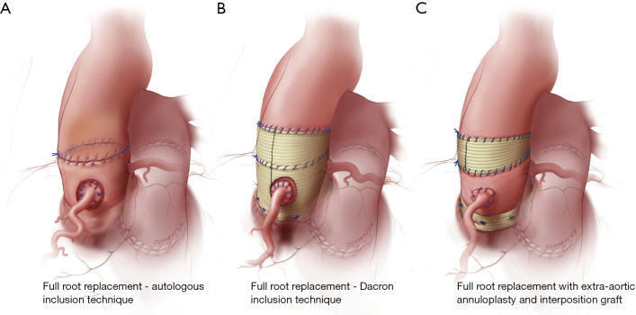
この表の含意は、単に「3つある」ということではない。3系統は「native大動脈基部を支持体として使うか、人工物に置き換えるか」という一本の軸の上に並んでいる。左端（subcoronary）はnative基部を最大限使い、右端（prosthetic inclusion）はDacronで全部置き換える。tailored RR＋補強とautologous inclusionはその中間で、前者は「必要な点だけ人工物で補う」、後者は「native基部を作り替えて全部担わせる」。
この軸を意識すると、後の章で出てくる対立が読みやすくなる。たとえば「なぜ Sievers のsubcoronary 630例では術前ARも弁輪径も再手術のリスク因子でなかったのか」（第2章）、「なぜ Liebrich は wrapped Ross後の再手術が難しいと言うのか」（第8章）は、どちらもこの軸上の位置から出てくる帰結である。
0-3. 補強の有無で何が変わるか
| 出典 | デザイン | 補強あり | 補強なし |
|---|---|---|---|
| Mylonas 2026（16研究、患者レベルIPDメタ解析） | RR 2,514例 vs NR 595例 | 生存 5/10/15年 100% / 98.8% / 98.8%、autograft再手術回避 96.4% / 94.2% / 86.6% | 95.0% / 93.7% / 82.6%（HR 11.9, P=.016）、95.8% / 87.6% / 77.7%（HR 2.06, 95%CI 1.47–2.89, P<.001） |
| Starnes 2023（単一術者、成人BAV 129例、中央値10.3年） | wrapped 58 vs unwrapped 71 | autograft失敗 3例（5.2%）、10年再介入累積発生率 4.0% | 25例（35.2%）、26.8%（SHR 0.28, P=.035） |
| Charitos（German-Dutch Ross Registry 2,023例・13施設） | 多変量。subcoronary 771／無補強RR 346／補強RR 643（弁輪のみ394・STJのみ35・両方214） | — | 無補強のroot replacementは再手術までの時間を短縮する独立予測因子（HR 2.4, 95%CI 1.4–4.1）。同じ解析で術前の純ARも独立予測因子（HR 2.3, 95%CI 1.5–3.5） |
Mylonas の生存に関する HR 11.9 は 95%CI 1.59–88.9 と極端に広い。症例数の少ない比較研究からIPDを再構築した推定であり、点推定値を強調しすぎるべきではない。「補強群が有利」という方向は3つの独立した根拠で一致しているが、「11.9倍」という数字自体は再現される保証がない。
そして繰り返しになるが、Mylonasのサブグループ解析では補強法の違いによる差はなかった。したがって以下の章で述べる各流派の手技は、現時点では「どれが正しいか」ではなく「どれも成立する。ただし実装を間違えると失敗する」という前提で読まれるべきである。
第1章 解剖とautograft採取 — 最初の30分で遠隔成績が決まる
1-1. 肺動脈弁には「線維性弁輪」がない
この章の全体、いや本レビュー全体の出発点はここにある。Mazineの教育論文の記述が最も明快である。
大動脈弁と異なり、肺動脈弁尖は漏斗部筋（infundibular muscle）に囲まれているだけで、真の線維性弁輪を持たない。採取後、この筋は脱血管化し、構造的支持を一切提供しない。
ここから、ほぼすべての流派が共有する2つの帰結が出る。
- 筋を残さない — cusp insertionから2〜4mmまでトリムする
- LVOT内に深く留置し、native大動脈弁輪に支持させる
Tirone David はこれをさらに一歩進める。
肺動脈基部のsubcommissural triangleの右室筋は切除すべきである。壊死して線維組織に置換されるからだ。したがって、治癒過程での肺動脈弁輪の拡大を防ぐために、subcommissural areaがnativeの大動脈弁輪・基部組織で外部から支持されていることが極めて重要である。
これが「なぜ外部支持が要るのか」という問いに対する生物学的な答えであり、第3〜5章に出てくる補強法の多様さは、すべてこの一文への異なる回答として読める。支持が必要なのは弁尖ではなく、弁尖を吊っている筋の側である。
1-2. 幾何学の原則（David）
- 健常な小児・若年成人では肺動脈弁STJは大動脈弁STJより2〜3mm大きい。半月弁の弁輪はそのSTJよりわずかに大きい。大動脈弁疾患ではこの関係が崩れている
- 大動脈位に移す際、横径だけでなく各cuspの三日月形の付着形状も保たねばならない
- 可能な限り、肺動脈弁輪はLVOT周の大部分でnative大動脈弁輪より低い位置に置く
- 正常な大動脈弁輪は大柄な人でも25mmを超えることは稀である。弁輪径とBSAの関係はBSA 2 m²を超えると頭打ちになる
最後の一項は、第5章のサイジング論争（「autograftの実測径に合わせるのか、患者の体格から決めた目標径に合わせるのか」）の根拠になっている。「大きな患者だから大きな弁輪でよい」は成立しない。
1-3. 採取のランドマーク — 5施設の記載を並べる
| 手順 | Mount Sinai (Mazine) | Melbourne (Skillington) | Leiden (Schneider) | Boston (Dafflisio) | Dallas (Chandra) |
|---|---|---|---|---|---|
| PA離断位置 | 右PA起始の5mm近位（右PAは常に左PAより近位＝ランドマーク） | 肺動脈弁STJの5〜8mm上 | 左右PA合流部の直下 | — | — |
| RVOT切開 | 右角鉗子を弁を通して挿入 →「poke a hole」非対面尖の5mm下 | 右角鉗子で作った圧痕上に、弁の5mm近位で横切開 | 右角鉗子を弁尖基部の5mm下に置いてガイド | hinge pointの3〜4mm下。最初は浅く切って、そこからskive up | 右角鉗子を弁輪の6〜8mm下に |
| 残す筋 | cusp insertionから3〜5mm以内 | — | 過剰筋は全て切除（残すとLVOTに膨隆する） | 2〜3mm | — |
| 第1中隔枝 | 左対面尖のnadirの約1cm下に出る。RVOT筋内に白い線として見えることが多い → cusp insertion lineの2〜3mm下に留まれば回避できる | 左後方、心内膜面から深さ可変 → 見えたら避ける | 心室中隔レベルで右室壁と左室壁の筋線維の走行方向の違いが必ず観察される。その層間が剥離面であり、そこを辿れば第1中隔枝は容易に同定・温存できる | 浅く切ってskive upで回避 | #15刀で漏斗部中隔上部の後方筋束を部分的に分割 |
6施設目：Lübeck（Sievers, subcoronary） — 表に収まらないので別記する。肺動脈幹の切開は前交連の5mm遠位、RVOT切開線は右角鉗子を弁を通して入れ「肺動脈弁輪の2mm下」を示させて決める。残す筋は1〜2mmのみで、同時にinterleaflet triangleの中点に浅いscallop状の切開を入れて印にする。つまり RVOT切開の高さは Lübeck 2mm ／ Boston 3〜4mm ／ Mount Sinai・Melbourne 5mm ／ Dallas 6〜8mm と3倍以上の開きがある。subcoronary（弁だけを移す）ほど筋を要さず、Dacronに固定する術式ほど縫い代として筋を要する — この数字は術式から逆算されている（第11章 対立点#10）。
「第1中隔枝を避けよ」はどの論文にも書いてあるが、どうやって避けるかまで書いているのはSchneiderだけである。右室壁と左室壁では筋線維の走行方向が違うので、心室中隔レベルではその境界が必ず見える。その層間が正しい剥離面であり、そこを辿れば中隔枝は自然に温存側に残る。 「白い線が見えたら避ける」（見えなければ避けられない）よりも一段確実な指示になっている。
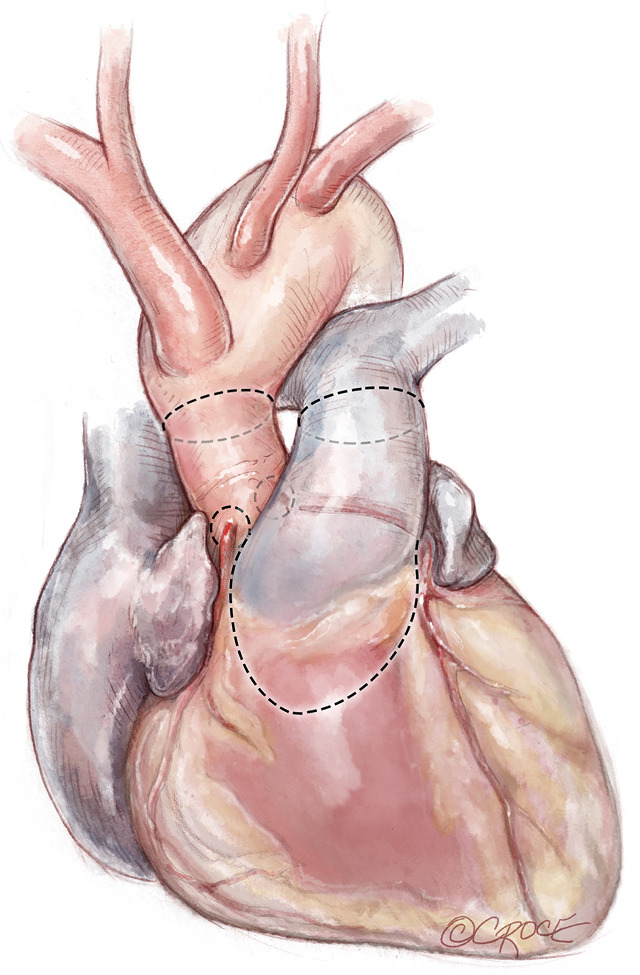
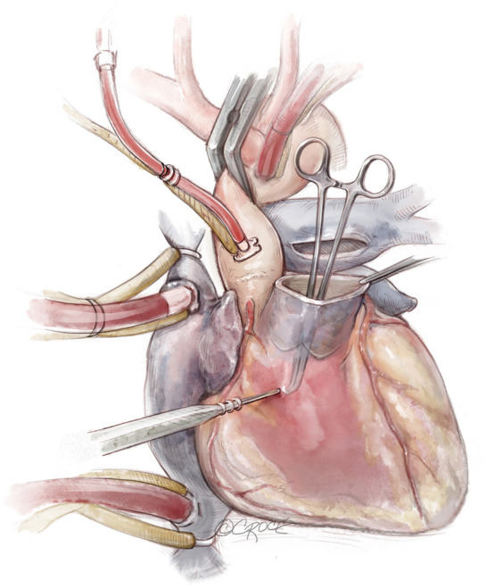
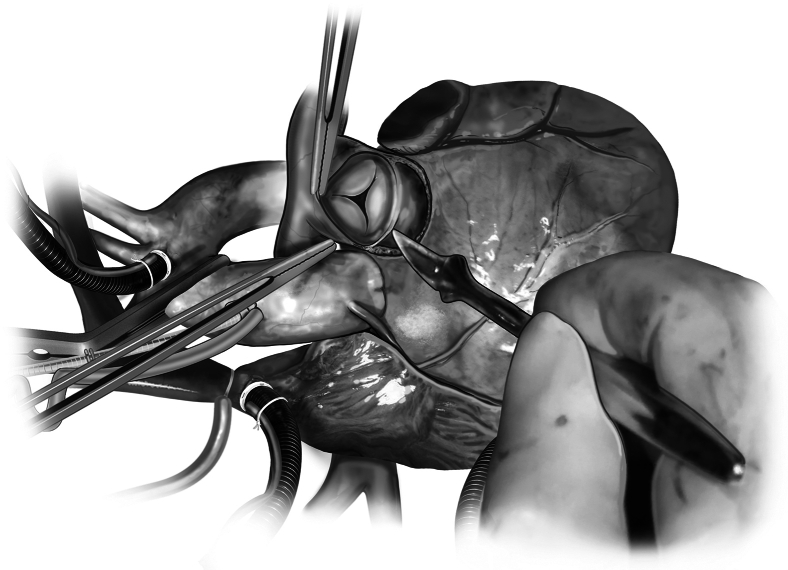
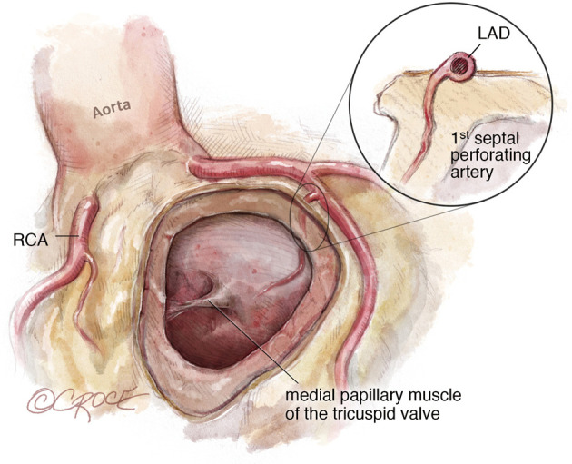
補強法別の重要な例外：Urganci（Vienna, root-reinforced Ross）は「Valsalva人工血管への再植込みを容易にするため、弁輪下に最低5mmの筋組織を採取する」としており、trimの原則と真逆である。Dacron内に固定する術式では縫い代が要るという事情による。「筋は残さない」は絶対原則ではなく、補強法から逆算される変数である（第11章 対立点#10）。
1-4. 冠動脈のpitfall
剥離の向きを逆にする
Mazineの表現が最も記憶に残る。「冠動脈ボタンを大動脈から剥がす」のではなく「大動脈を冠動脈から剥がす」。 低出力電気メスで、大動脈壁に平行な層を左房天蓋まで進める。右冠動脈も同じで、「大動脈を右室から剥がす」と考える。直接損傷のリスクが激減する。
ボタンのカフを残しすぎない
ボタン下縁の大動脈カフを2mmを超えて残さない（Mazine）。残しすぎると拡張期に冠動脈の動的閉塞を起こしうる。
左冠動脈のkinkingはinclusion系で最大の落とし穴
Skillingtonは左冠周囲の窓を内外側にやや広く切除する。Caldaroni 516例の唯一の早期死亡は、左主幹のkinkingによる前壁梗塞だった。inclusion法ではautograftをnative基部の内側に収めるため、冠動脈は「native基部に開けた窓を通って」autograft洞に到達する。この経路が屈曲しやすい。
遮断解除後の目視確認
両冠動脈が屈曲なく基部から出ていることを必ず目視で確認する。 Skillingtonが複数の論文で繰り返し強調している一点である。
植える順番を変える2つのtip
- Said：右冠動脈ボタンは遠位大動脈吻合の後壁縫合線を完成させてから植えてもよい。基部の回旋を防ぎ、特に肥満患者で右室上の心外膜脂肪により近位RCAが圧迫されるのを回避できる
- Schneider：右冠は術後に元より高い位置に来るため、遠位吻合を済ませてから最後に再建する
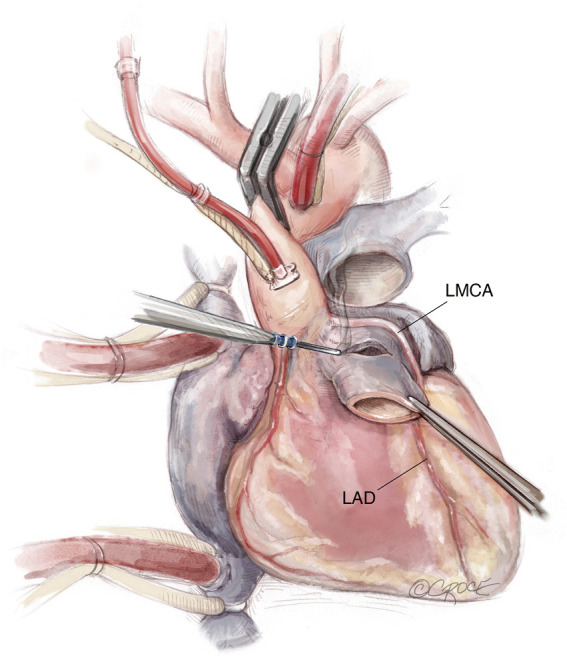
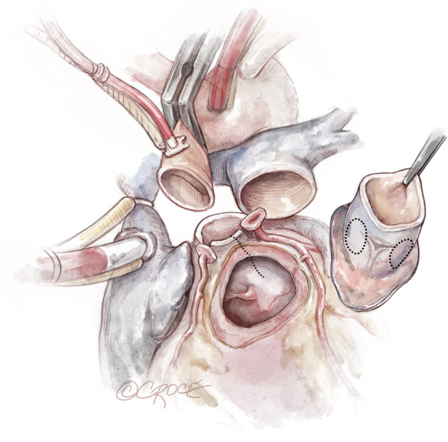
症例で見る帰結 — 「造影で正常に見えても否定できない」
26歳男性、二尖弁の高度ARに対するRoss（Koliastasis, JACC Case Rep 2025）。術後ICUで一旦は正常心電図だったが、夜間の定期心電図で前壁ST上昇を認めた。大動脈造影では両冠動脈口の植込みは正常に見えた。ところが冠動脈造影ではLADの起始部が完全閉塞していた。 PCIで再開通させたが穿孔を来し、被覆ステントとImpella 5.5を要した。
Ross後の心筋虚血を疑ったら、大動脈造影で満足せず冠動脈造影まで行く。植込み部より遠位の屈曲・閉塞は、基部の造影では写らない。
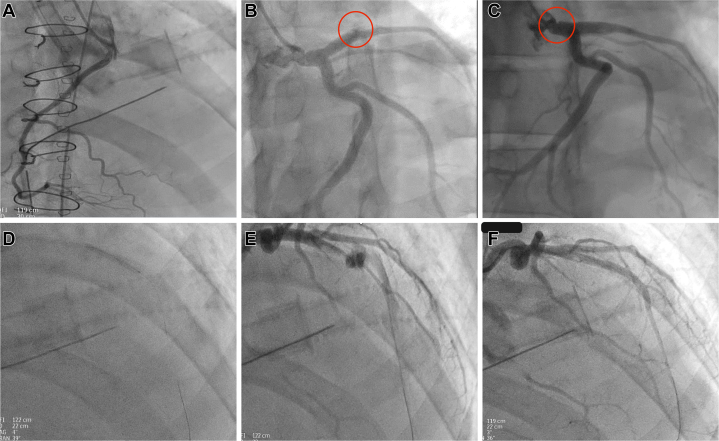
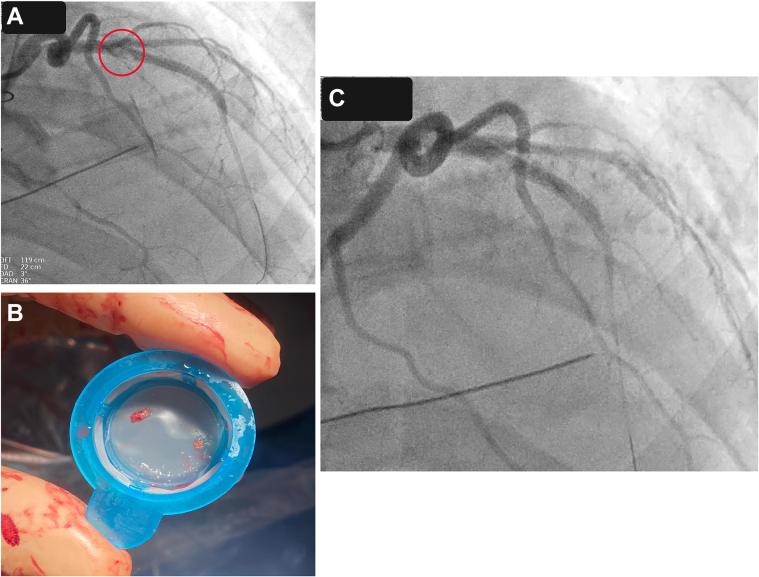
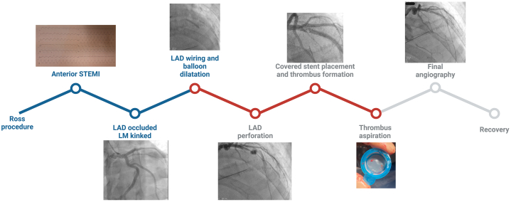
1-5. 刺激伝導系・不整脈
- Bockoven（小児42例）：周術期心室頻拍 29%、一過性完全房室ブロック3例（全例が弁下部の同時手技＝Konno等を併施していた）、永久ペースメーカー 0例
- 成人単独Rossでのペースメーカー植込みは稀である（Sievers 501例で5例、Tagliafierro 673例で1.2%）
- 膜性中隔基部は温存する（脚ブロック回避）
外部リング・弁輪縫合を置くときの具体的な回避法が3流派で異なる。いずれも「膜性中隔のところだけ扱いを変える」という同じ発想である。
| 施設 | 膜性中隔での扱い |
|---|---|
| Montreal（Basmadjian） | 膜性中隔部の糸だけ他より1〜2mm高く置く |
| Montreal（Côté, STJリング） | 右-無冠交連の6本目だけ大動脈の外側からかける |
| Homburg（Matsushima, ePTFE） | 膜性中隔領域では縫合糸を大動脈の外に出したまま通す |
| Wroclaw（Jasinski） | 糸を引き離して膜性中隔を同定してから刺入する |
1-6. 採取床からの出血 — 「今やらないと二度とできない」
Liebrichのtip：冠静脈洞からの逆行性灌流で小血管を可視化してから低出力電気メスで止血する。この段階なら容易だが、手術終盤には到達困難になる。
Schneiderはさらに強い言い方をする。
心拍動下でRVOTの止血を丁寧に行う。必要なだけ時間をかけることが重要である。homograft近位吻合の後に残った出血への対処は極めて困難で、縫合線を作り直さねばならないこともある。
Skillington・Said・Conciも同旨を述べている。「時間をかけろ」と明記された手技ステップはRoss手術でここだけである。
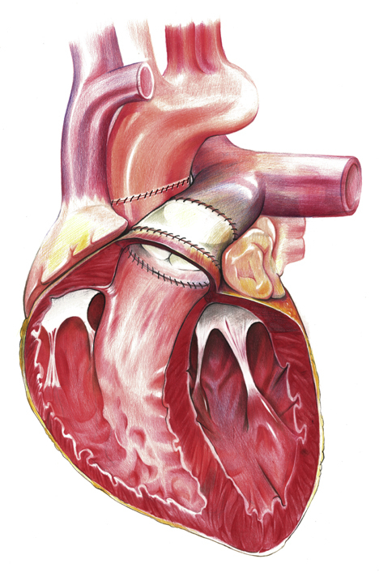
▶第2章 術式① Subcoronary（原法）— なぜ生き残っているのか
2-1. 手技の核心（Sievers, Lübeck ／ Misfeld, Leipzig）
原法は「弁だけを移す」術式である。手技の一次資料は Sievers 2010 JTCVS の online E-Appendix（誌面 822.e1–e5、Figure E1–E9 と動画）であり、ここに全4工程が最も細かく書かれている。Misfeld のACS 2021論文はその後継版で、材料と閾値が一部変わっている。以下は E-Appendix を骨格にし、Misfeld 2021 で更新された点を併記する。
① 大動脈切開と弁の検分
- 切開は S字状に無冠洞まで入れる（Misfeld 2021 は「oblique または hockey-stick様に無冠尖中央まで」）。とくにBAVでは無冠洞が拡大していることが多く、後の閉鎖でautograftのサイズに合わせて調整できるため、この洞に入れることに意味がある
- 石灰化の除去は徹底的に行う
- Hegar dilatorで基部を実測する
- STJは少なくとも「仕上げた弁輪」と同じ径であること。数mm大きいのは差し支えない（autograftはSTJ拡大に伴う逆流に対する抵抗性がよく保たれるため）
- ⚠️ 逆に、STJが肺動脈位にあったときのautograft径より小さくなると、cusp prolapse由来のAIのリスク因子になる。対策は幅1cm程度の心膜パッチを大動脈切開の閉鎖線に入れるか、そもそも無冠洞を切開しないか
- STJまたは上行大動脈が>50mmなら、上行を supracommissural tube graft で置換する
- 三尖弁の基部は理想的。BAVはtype I・IIなら基部形態は良好、type 0 は困難であり、代替の弁があることを考えれば適応そのものが疑わしい
- 弁輪径が31〜32mmを超えるならRossを行わない（Misfeld 2021 の同一論文内に「>32mm」「>31mm」両方の記載。実務上は「31mm台からは慎重に」）
② autograftの採取
- 肺動脈幹を前方から半周、前交連の5mm遠位で切開して弁を検分する。大きなfenestration、肥厚・退縮した弁尖、四尖弁は禁忌。弁尖と洞のわずかな不均等までは許容し、基部内での置き方で調整する
- 肺動脈幹を完全に離断して前方に倒し、後方で外膜と肺動脈幹の間の層を剥離する。autograftの近くを保つこと
- Overholt鉗子を肺動脈弁を通してRVOTに入れ、肺動脈弁輪の2mm下のレベルを示させて右室の横断切開線を決める（＝Lübeckの数字は2mm。Melbourne 5mm・Dallas 6〜8mmとの差は第1章の表を参照）
- 切開は弁尖の半月状付着に沿って進め、後方では弁と右室筋の間の剥離層を探す
- ⚠️ 左側方に注意する。典型的なRVOT筋束が第1中隔枝の位置を示す（図E1）。この領域では肺動脈弁輪の極近傍を保ち、autograft側に残す筋を最小限にする。ここで剥離層が深くなりすぎると中隔枝を損傷する
- 採取後、左冠動脈から心筋保護液を流して出血点を同定・処理する
- autograftは筋組織を1〜2mmだけ残してトリムし、interleaflet triangleの中点に浅いscallop状の切開を入れて印にする（図E2）
③ autograftの植込み — 平面性と「U字1針＋単結節3針」
- 近位縫合線は、切除した大動脈弁尖の半月状付着に沿い、交連までの高さの半分までをたどる。通常は左冠洞から開始（図E3）
- autograft側の針（4-0 polyfilament）は肺動脈弁尖の付着部そのもの、またはそこを貫いて置き、大動脈側の線と合同になるようにする（図E4）
- ⚠️ autograftは基部と side by side に置く（図E5）。反転（inversion）法は弁尖の歪みを起こしうる
- U字1針 → 単結節3針 → 再びU字1針、の反復（図E6）。U字糸は後でautograftを基部内へ牽引・位置決めするのに極めて実用的
- 平面的な（planar）近位縫合線を目指す。針はcusp attachment lineの極近傍を通す（Misfeld 2021）
- 弁輪径がおよそ25mmを超えるなら、結紮しながら 2-0 ePTFE（Gore-Tex）糸または Dacronストリップを縫合線に織り込む。各セグメント（U字1本＋単結節3本）ごとにストリップを張ることで、弁輪径を固定あるいは縮小できる（図E7）
- 2-0 ePTFE糸を使う場合、両端を無冠尖nadirの外側に出してTeflonパッチ上で固定する
- 代替案：無冠洞と左冠洞の間のinterleaflet trigoneを、外側からのU字縫合でplicateして弁輪を縮小する
- ※ Misfeld 2021 では材料が心膜ストリップに変わっている（止血・弁輪狭小化・補強を兼ねる。結紮時にストリップを軽く引いて縮小量を調整する）。発動基準も「弁輪径26〜28mmで左-無冠trigoneを心膜補強3-0モノフィラメントで狭める（3〜4mm縮小）」と具体化された。同じ流派でも10年で材料と閾値が動いている
- 交連は 5-0 Prolene U字縫合で、内側に自家心膜pledget・外側にTeflonパッチを当てて、元の大動脈弁交連の真上に、通常およそ1cm持ち上げて固定する（図E8）
④ 洞の処理 — 原法の要点はここ
- autograftの左右冠洞は「ごく一部だけ」切除してからsubcoronaryに縫着する
- 縫着は5-0 Prolene連続、左冠洞から、しかも術者から最も遠い点から開始して手前に向かって進める。次いで糸のもう一端を内→外に大動脈壁を貫いて、左右冠動脈口の間の交連まで進める（図E9）
- 最大の肺動脈洞を無冠洞に置く（Sievers type I L/R BAVで特に有効）
- 無冠洞のみautograft側の壁を温存し、native無冠洞を直接閉鎖・部分切除・心膜パッチのいずれかでautograft無冠洞のサイズに合わせる。5-0 U字縫合で両無冠洞を固定する（Misfeld 2021）
- 大動脈は最終的に4-0モノフィラメントで閉鎖する
⑤ 肺動脈homograftの植込み（Lübeck式）
- ほぼ全例で「長い」（分岐部まで届く）肺動脈homograftを使う。径は25mm以上を選ぶ
- allograftの筋組織は可能な限り切除し、2〜3mmだけ残す。あるいは筋のrimを心膜またはePTFEストリップで丸ごと置き換える。心膜パッチの優位性はわずかなので、現在は小径homograftにのみ適用している
- 遠位吻合は5-0 Prolene。針目を細かく置いて縫合線による絞扼を軽減する
- 近位吻合は5-0または4-0。中隔枝の領域では糸を浅くかける
① STJがautograft径より小さいとcusp prolapse由来のAIになる（＝ subcoronaryでもSTJは独立した失敗レベルである）／② inversion法は弁尖を歪めうるので side-by-side に置く（第4章のeversion／反転系の流儀と真っ向から対立する）／③ U字糸は牽引・位置決めの道具である（縫合パターンの理由が書かれているのはここだけ）／④ 交連は約1cm持ち上げる（他論文の「十分高く」に唯一数字が付く）。
type 0 BAV への対応（Sievers 2018）
180°に位置する冠動脈口の間に、通常は大動脈基部の左外側に、autograftのための新しい交連を作る。他の交連は基部の右側と冠動脈口に固定し、autograftの幾何学を可能な限り保つ。
autologous inclusion（第4章）では「type 0 BAV・一尖弁には不向き」とされる。同じ「native基部を使う」術式でありながら、subcoronaryは交連の位置を自由に作り直せるため、type 0に対応できる。基部の対称性を作り替える自由度は、術式によって全く違う。
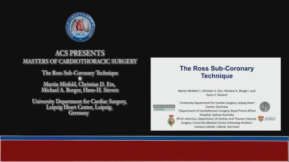
▶2-2. 成績 — 20年で再手術回避85.9%
| Sievers 2010（501例、平均5.9年） | Sievers 2018（630例、中央値12.5年・最長22.3年） | |
|---|---|---|
| 病院死亡 | 0.4% | 0.3% |
| 生存 | 一般集団と同等 | 20年 73.1%（年齢性別マッチ一般集団と有意差なし） |
| 再手術回避 | autograft＋homograft 10年 91.9% | 20年 85.9%（0.6%/患者年）、autograft 89.8%、homograft 91.0% |
| ペースメーカー | 5例 | — |
Valve Performance Classification（VPC） — Sievers 2018 が提案した、血行動態・症状・管理方針を統合した分類。20年時点で class I 5% / II 74% / III 19% / IV 1%、すなわち79%が良好なclass I–IIにとどまっていた。術式間比較の共通言語として有用である。
2-3. subcoronaryだけリスク因子のプロファイルが違う
Sievers 2018 の最も重要な所見は成績そのものではない。
術前弁輪径、術前AR、弁輪補強、STJ補強、二尖弁の型のいずれも再手術の有意なリスク因子ではなかった。二尖弁と三尖弁で再手術までの時間に差はなかった。
これは full root の文献群（術前ARと弁輪拡大が支配的なリスク因子）と真正面から食い違う。著者らの解釈はこうである。
subcoronary法ではnative大動脈基部そのものが自然な動的外部補強として働き、基部拡大を防ぎautograft機能を保つ。
つまり原法は「補強を追加する術式」ではなく「補強を最初から内在させている術式」である。第0章の軸で言えば最左端であり、人工物による補強の議論（第3〜5章）とは別の解を出している。本レビューではこれを「補強＝人工物 vs 補強＝native基部温存」という対立軸の一方の極として扱う（第11章 対立点#7）。
2-4. subcoronary vs root replacement — 集団を分けると結論が反転する
Berdajs 2014のsystematic review（24研究）:
| 集団 | 10年生存 | 10年 再手術回避 |
|---|---|---|
| 成人 | SC 94% vs RR 95.3% | SC 98% vs RR 91.2% |
| 混合集団 | SC 87.3% vs RR 89.1% | SC 83.3% vs RR 93.3% |
| 小児 | SC 90% vs RR 92.7% | SC 93.3% vs RR 92.0% |
著者らの結論は「結果はsubcoronaryのroot replacementに対する優位性を支持しない」である。しかし表を素直に読むと、成人だけを見れば再手術回避はsubcoronaryが98% vs 91.2%と逆転している。混合集団のプールが小児例に引きずられている可能性が高い。
「subcoronaryは優れていない」という結論は、成人に限れば支持されない。少なくとも「成人のAS・混合病変」というsubcoronaryの本来の適応内では、root replacementに劣る根拠はない。
2-5. 位置づけ — 4人の評価
- Misfeld：「すべてのAS・混合病変でsubcoronaryを選ぶ。autograftがnative大動脈基部に守られるから」
- David：「両基部の幾何が似ていればsubcoronaryが最良のアプローチ。しかし私の経験では、それは例外であって原則ではない」
- Scorsese（麻酔科視点の総説）：技術的複雑さとautograft本来の形状を歪めるリスクから使用頻度が低い。大動脈基部の非対称（Sievers type 0、二尖弁、一尖弁、基部瘤）では適用が制限される
- Lübeckの除外基準：弁輪>31〜32mm、洞が2つしかない"true" BAV。加えて高度左室機能低下、多枝冠動脈疾患、結合組織疾患・活動性リウマチ、基部の高度変形、肺動脈弁異常、コントロール不能の高血圧
要するに 「幾何が合っていれば最良、合っていなければ使えない」 術式である。適応が狭いのは欠点だが、適応内での成績は20年データで担保されている。
subcoronaryの全工程を図解した唯一の資料は Sievers HH, JTCVS 2010;140:816-822 の E-Appendix（誌面 822.e1–e5、Figure E1–E9 ＋ 動画） である。本文（2-1）はこのE-Appendixを一次資料として全面的に反映しているが、図そのものは非オープンアクセス（© Elsevier / AATS）のため本レビューには掲載していない。原典は下記から参照できる。 ・記事（全文・supplementary material）: jtcvs.org（PII S0022-5223(09)01540-2） ・ScienceDirect: sciencedirect.com/science/article/pii/S0022522309015402 ・E-Appendixは別ファイルではなく、記事PDFの誌面 822.e1–e5（PDFの最終5ページ）にそのまま綴じ込まれている。 手元のPDFを最後まで開けば Figure E1–E9 がある
2-6. subcoronary特有の術後管理
Lübeckのレジメンは他施設と明確に違う。
クロピドグレル 75 mg/日を3ヶ月 ＋ イブプロフェン 400 mg/日を5週間 ＋ 生涯の血圧管理。
他施設の「NSAID 3〜6ヶ月」「アスピリン3ヶ月」とは薬剤も期間も一致しない。抗血小板薬・抗炎症薬の期間は施設ごとにばらばらで、比較試験は存在しない（第10章 10-5）。
第3章 術式② Free-standing full root ＋ 補強（RR+R）
最も広く行われている系統である。基部ごと入れ替えたうえで、弁輪・洞・STJの3レベルを個別に補強する。以下、施設ごとに「何をどこまで補強するか」が驚くほど違うことが見えてくる。共通しているのは「基部をfree-standingのまま放置しない」という一点だけである。
3-1. Mount Sinai式 tailored total root（Williams & El-Hamamsy）
- 大動脈をSTJの5mm遠位で切開する
- 無冠洞と左-右交連のnative組織は温存する（後で外部支持に使うため）→ 露出のために無冠洞を切り開かない
- autograftはtop-downで採取、右PA起始の3〜5mm近位から
- 漏斗部筋は2〜3mm残してトリム
- 結節4-0 proleneで弁輪下（subannular）に深く留置。針は大動脈弁輪の1mm上から入れ2〜3mm下に出す。autograft側は肺動脈弁尖のhinge pointから上向きに通し、薄い漏斗部筋を縫合線から除外する
- neo-commissureを大動脈弁輪レベルで120°対称に配置する
- 冠動脈ボタンは各洞の中央、STJより下に
- 大動脈吻合を完成させる前に≥28mmの大型肺動脈homograftを植込む（遠位5-0、近位4-0で、心室中隔は部分層で刺して中隔枝を避ける）
- 交連上のPA余剰を切除し、交連の2〜3mm上までとする
- 上行大動脈≥38mm、またはautograft STJと上行大動脈のmismatch → 26 or 28mm Dacron interposition graft
- CPB離脱・プロタミン後に、温存した無冠洞と左-右交連のnative組織をinterposition graftにtackし、非拘束的（non-constraining）な外部支持とする
成績：2010年以降>500例、手術死亡2例（0.4%）で両方とも最初の100例内。退院時平均圧較差4mmHg。10年まで基部径・弁機能は安定。
補強をプロタミン後に行う点が重要である。CPB下の萎んだ基部で補強を決めると、拍動下の実寸と合わない。かつ「tack（留めつける）」であって「wrap（包む）」ではない。native組織を、拘束せずに添えるだけ。これが「dynamismを保つ」という主張の実装である。
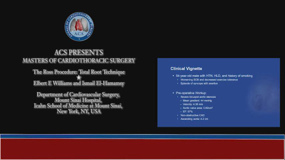
▶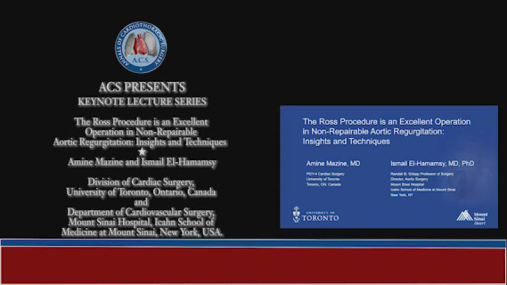
▶3-2. 同じMount Sinaiのもう一つの系譜（Stelzer, 702例・1987–2019）
同一施設でも Stelzer の補強の考え方は異なり、フェルトを使う。
- 当初から測ったフェルトストリップでneo-aortic弁輪を拘束する
- 中期以降2本目のフェルトストリップをSTJ安定化に追加
- 洞部は可能な限り残存native大動脈壁で支持
- homograftは10%オーバーサイズ。2008年以降>99%が脱細胞化
- 上行大動脈は>5cmで置換、それ未満の拡大はaortoplastyで縮小。目標は<3.5cm
- 全縫合線が連続縫合。心膜上部を大血管の上で可能な限り閉鎖する（再開胸を容易にするため）
- 抗線溶薬をルーチン、acute normovolemic hemodilutionをルーチン化
- SBP<110 mmHgを、特に最初の24〜48時間、厳格に
成績（702例）：手術死亡 7例（1%）、合併症 6.6%。
| simple群（419例, 59.7%） | complex群（283例, 40.3%） | |
|---|---|---|
| 定義 | 既往開胸なし＋軽微な同時手技のみ | 既往開胸あり and/or 上行置換・僧帽弁形成等 |
| 手術死亡 | 0.7% | 1.4% |
| 合併症 | 4.8% | 9.2% |
そして時系列でみるとsimple症例は減り、complex比率は34%→48%に増えたにもかかわらず、死亡率は下がった。
Ross手術の適応を広げる議論では必ず「難しい症例に手を出すと成績が落ちる」という反論が出る。Stelzerの702例は、同一術者・同一施設で、症例の難度が上がりながら死亡率が下がったという反例である。ラーニングカーブ（第9章）と読み合わせるべき。
3-3. Stuttgart式 reinforced FRT（Liebrich, 832例・25年）
- 漏斗部筋を3〜4mm残し、Hegarでサイズ計測
- 3本のproleneを大動脈弁輪の各nadirとautograftの対応nadirに置いて固定 → 近位吻合はnadir間の連続縫合
- FRT＋AR群では近位縫合線にDacronストリップを織り込み、さらに大動脈壁remnantからautograftへ2本目の縫合線を作って弁輪を安定化する
- CPB 172分、遮断137分。30日死亡 0.96%（8例）。補強あり73%／なし27%
成績（832例）：累積生存は 5年 97%（95%CI 95–98）／15年 92%（90–94）／20年 86%（82–90）。Ross関連再手術137例、初回再手術までの中央値8.2年、再手術の病院死亡は1.1%。
Liebrich論文のAbstractは「20年生存92%」と書いているが、Results本文は「15年92%／20年86%」である。Abstractの数値は15年値の誤記と判断し、本レビューではResults本文（20年86%）を採用する。
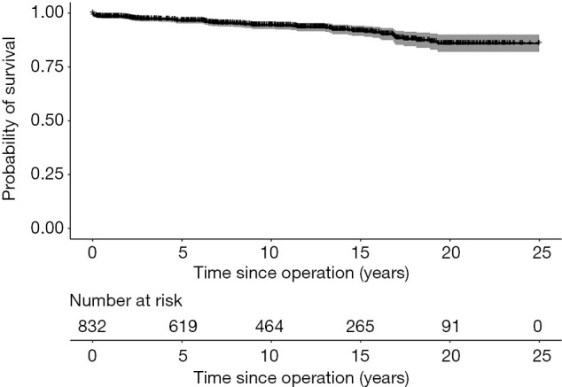
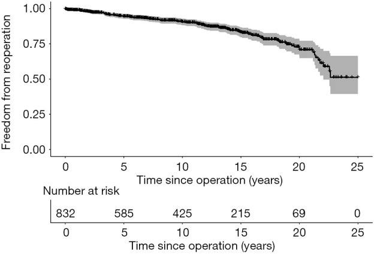
Liebrichが明示した4つのpitfallと3つのcaution
pitfall
- 左主幹・第1中隔枝の損傷 → #15刀で後方RVOT心内膜を弁輪の5〜8mm下に切開する
- 近位「補強」縫合線、とくに弁輪安定化のための2本目の縫合線での深すぎる刺入によるautograft弁尖損傷 ← 補強そのものが弁尖を傷つけるという、補強派にとって最も痛い指摘
- RV-PA connectionのkinking — autograftに対して導管を長く残しすぎると、心臓が血液で満たされた時に遠位吻合部が折れる
caution
- autograft拡大の回避 ＝ 近位吻合の補強 ＋ autograftを短く保つ ＋ 遠位（neo-STJ）安定化のための上行大動脈Dacron置換
- autograft逆流の回避 ＝ malalignment/distortionのない縫着。解剖学的にやむを得ない場合は冠尖のcommissural plicationによる2〜3mmの「軽度oversizing」
- autograft床からの出血 ＝ 冠静脈洞逆行性灌流で出血点を可視化してから低出力電気メス
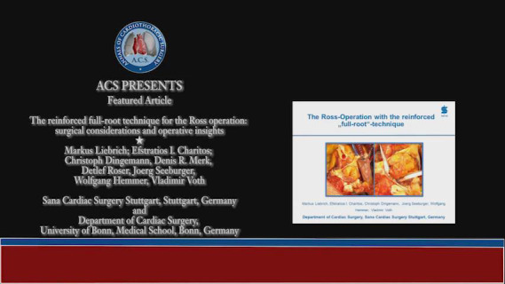
▶3-4. Aswan式 loose jacket（Afifi & Yacoub）
「native大動脈壁でautograftに緩いジャケットを着せる」という発想。
- 上行大動脈を中央（交連の約2cm上）で完全に離断 → 近位大動脈を無冠洞のnadir直上まで縦切開する
- 採取：筋カフ2〜4mm、遠位は交連の2〜3mm上
- 縫着：すべての針を、大動脈側では弁輪の直下に、肺動脈側では肺動脈弁輪を含めて通し、肺動脈基部を大動脈弁輪の「中に埋める」
- 冠動脈ボタンは大動脈壁に残した孔を通してautograft洞に到達させる。十字切開で孔を広げてkinkを防ぐ
- loose jacket：涙滴型の新鮮心膜で無冠洞切開を閉鎖しつつやや拡大 → autograft周囲にnative大動脈壁の筒ができる。ジャケット上端を頭側に持ち上げて遠位大動脈吻合部を覆い、4〜5本の結節縫合で固定する
手順5の最後の一手（ジャケット上端を吻合部の上まで持ち上げる）は、autograft上方のnative大動脈の遅発性拡大を防ぐための必須手順として明記されている。「洞だけ包んで満足する」と、その頭側が拡大する。
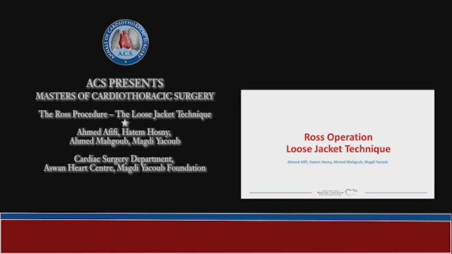
▶3-5. Homburg式 suture annuloplasty ＋ simplified root wrapping（Matsushima & Schäfers）
補強を「糸1本」で済ませる、最も人工物の少ない解。
- 弁輪径>25mmで外部suture annuloplastyを発動する
- autograftを左室内に反転させて弁輪内（intra-annular）に連続4-0で縫着 → 引き戻して縫合線を目視確認し、必要なら追加縫合する
- ePTFE（Gore-Tex CV-0）の走らせ方：一方の針は右-左尖間交連の外側の中隔筋から入れ、基部弁輪の後方周をまわってaortomitral continuityへ。他方の針は右尖nadir外側の右室心筋を前方に通し、膜性中隔の領域では大動脈の外側に出したまま、無冠尖nadir外側の大動脈外膜を接線方向に通す
- BSAでHegarを選んで結紮する（BSA<1.8 m² → 21mm、≥1.8 m² → 23mm）
- 上行大動脈>30mmならDacron置換（BSA<1.8 → 24mm、≥1.8 → 26mm）
- simplified root wrapping：autograft遠位吻合に大動脈基部組織のtongue（交連部）を巻き込む → 10〜15mm幅のnative基部壁がautograftの3交連の外側に残る
- 15例で再手術・拡大・AIなし
ePTFEを結紮するHegar径は患者BSAだけで決まる（21 or 23mm）。autograftの実測径は参照しない。これは第5章のサイジング論争で「患者体格派」の最も純粋な形である。Mount Sinai（肺動脈弁輪径＋8−2mm）と真逆の設計思想であることに注意（第11章 対立点#3）。
3-6. MGH式 — 「測って印をつける」full root（Nam & Bloom）
柔らかいautograftを幾何学的に扱うための、最も体系化された手順。
- autograftを反転させてHegar/graduated cone上に載せ、3尖の交連とnadirを全てマーキングして対称性をconeで評価する
- autograftを戻して長さを測る（通常約4cm）＝ そのまま planned homograft length になる
- coneでLVOT内に60°間隔の基準マーキングを作る
- annuloplastyを要する場合は、60°マーキングの全点に6本のpledgeted糸を置き、目標弁輪径より5〜6mm大きいDacron graftのsewing ringに通して、実測autograft径のHegar上で結紮する
- 縫着の順序：右尖nadirから開始し、autograft側は外→内、LVOT側は内→外で深く。右-左交連へ向かい、次に左洞、autograftを術者の反対側に移して右洞の残り、最後に無冠洞
- 原則：crown状の外科的弁輪ではなく、basal ringレベルの平面的な留置
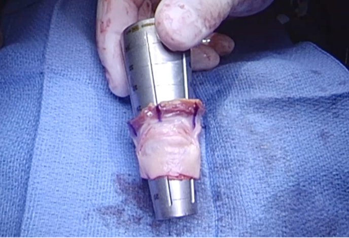
3-7. Florida sleeve Ross（Spindel, Ochsner）— 「簡便な補強」
David手術のFlorida sleeve法をRossに転用したもの。弁輪・洞・STJの3レベルを1本のbulged graftで同時に押さえる。
- 3洞すべてを切除し、弁輪上5mmの大動脈壁を残す
- 同一水平面に6本のpledgeted subannular縫合（各nadir下と各交連下に1本ずつ）
- bulged root graftのサイズ ＝ Mosaic valve sizerで測ったautograft弁輪径 ＋3mm（PA壁厚分）
- graftを1/6ずつマーキングし、縦に二分する
- autograft近位吻合を先に完成させる → 6本中5本をgraftに通してparachute・結紮
- 冠動脈用のスリットを作りボタン再建 → 上行大動脈置換
- 遮断解除後、無冠尖nadirの6本目をTEEガイド下に結紮する（＝これがannuloplastyのきつさを決める）
- 二分したgraftを緩く結節縫合で寄せ、遠位を上行graftにtackする。この緩さが早期の拍動ごとの血行動態変化へのcompliancyになる
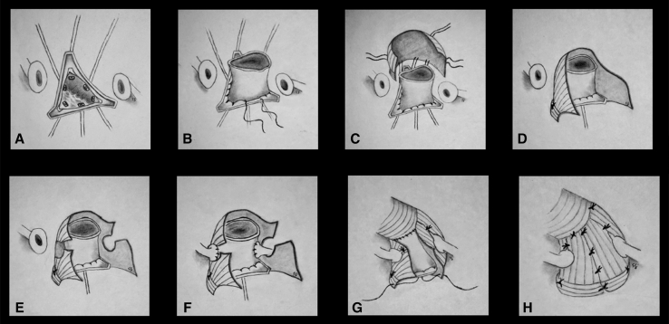
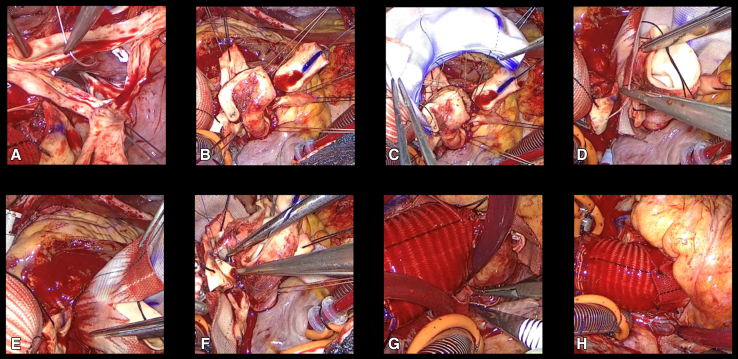
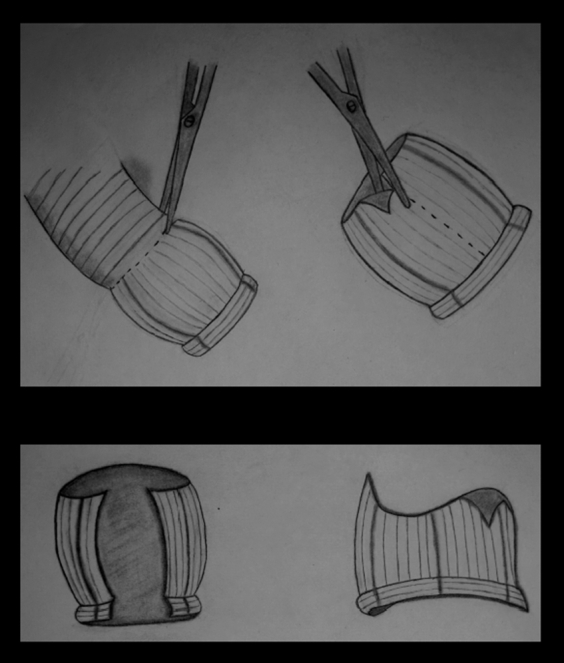
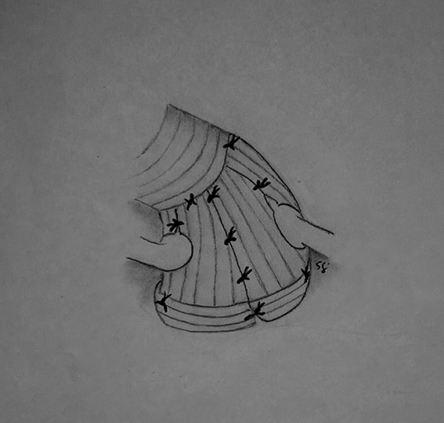
3-8. Ross-PEARS（Vienna / London）— 患者個別の外部メッシュ
手技（Conci, MMCTS 2023 / Redondo, JTCVS Tech 2024）
- 術前CTから患者個別の3Dプリント鋳型でメッシュ製の外部支持prosthesisを作製する。サイズは肺動脈径の115%（Vienna）。製作に約3週間
- prosthesisの近位hemを3本の等間隔prolene糸でマーク（＝3つの弁交連に対応）し、軸方向の縫い目を開いておく
- autograftをinvagination techniqueで大動脈弁輪に縫着する。連続4-0で、autograftとPEARS graftのhemを同時に取り込む → これで弁輪が完全に補強される
- 冠動脈ボタンはPEARS graftの後方と前方左寄りの洞に開けた2つの窓を通して再建する
- 上行大動脈とautograftの径差が大きい場合はreduction aortoplasty（Redondoの50例中44%が必要だった）
- CPB離脱・止血後にPEARSを大動脈の周りに巻いて、非冠動脈側で縦の軸縫い目を結節Ti-Cron糸で閉じる。autograftと上行大動脈の全長を覆うことが望ましく、reduction aortoplasty後は特にそうである
- Viennaでは腕頭動脈まで包む
他の補強との差別化（3点） ① 患者個別で幾何学を保つ ② 基部だけでなく上行大動脈全体を安定化する ③ しなやかなメッシュでautograftを隔離しないため滲出を許容する
成績（Redondo, London 50例, 2015–）：平均29.8歳（最年少9歳、14%が18歳以下）、38%が既往開胸（11例は既往AVR）、72%が二尖弁、平均上行径3.83cm。CPB 200.7分／遮断151.1分、在院中央値6日、平均FU 16.9ヶ月。死亡ゼロ。2例が後にAVR（1例はリウマチ性、1例はautograft弁尖の医原性損傷）。上行大動脈径は術直後から安定。
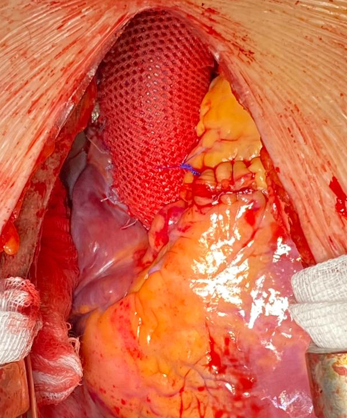
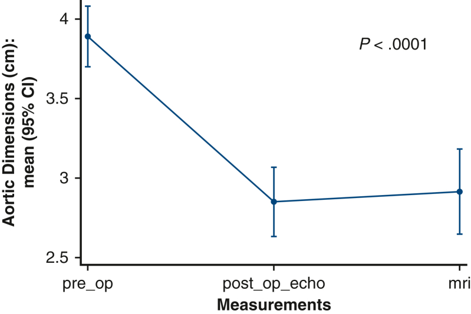
動画3-5 Ross procedure with personalized external aortic root support（Conci L, MMCTS 2023、10ステップ・13分半）→ mmcts.org/tutorial/1844（購読制）
動画3-6 Reinforcement of the pulmonary autograft root（Urganci E, MMCTS 2019）→ mmcts.org/tutorial/1288（購読制）
第4章 術式③ Inclusion — autologous（Skillington法）と prosthetic（Dacron）
4-1. Autologous inclusion（Melbourne, 516例・25年）— 「root-within-root」
設計思想
この術式の核心は、順序を逆にしたことである。autograftの実測径に大動脈基部を合わせるのではなく、患者の体格から決めた目標径に大動脈基部を作り替え、その中にroot replacementを行う。
手順
- CPB前に左前肺動脈洞をナイロン糸でマークする（後で右冠洞に向けるため）
- STJの5〜6mm上で横切開・離断する
- 無冠洞に縦切開を、横切開から弁輪の4mm手前まで下ろす（弁輪の最大露出）
- 目標径を決める：男性 24〜26mm、女性 22〜24mm（身長等で微調整。より新しい記載では男性24〜25mm）
- 縮小1〜3mm → plicationのみ ＋ 外部ポリエステルバンド補強
- 縮小4〜8mm → 無冠洞組織を弁輪レベルで最大幅10mm切除し、左冠動脈口をボタンとして外し、外側から弁輪レベルまで剥離して、左洞・無冠洞が張る範囲に60%周のポリエステルバンド（partial ring）を置く
- autograft洞に孔（fenestration）を開けておき、冠動脈ボタンを大動脈基部の内側に引き込んでautograft洞に吻合（6-0）する。左冠は左右両側で大動脈洞組織をやや多めに切除してkinkを避ける
- 無冠洞の縦切開を5-0で閉鎖する → autograftが大動脈基部に完全に内包される
- autograftの高さを患者の大動脈基部と同じに調整する
- 遠位吻合4-0。左冠吻合部より頭側では遠位大動脈基部も縫合線に含める（円周の15%＝1cm以上）
- 遮断解除後、下方の大動脈remnantを前方でfigure-of-eightナイロン糸により遠位autograft吻合線に吊り上げる — ずり落ちて右冠動脈を塞ぐのを防ぐため
- autograftをできる限り頻繁に血液に浸す（採取後の待機中は右心膜腔で、植込み中は左室ベントを時々止めて）— 弁尖の生存性・細胞完全性の維持のため
「autograftを乾かすな、血に浸せ」という指示は Melbourne だけである。弁尖の内皮・間質細胞の生存を意識した操作で、根拠は間接的だが、コストゼロで実行できる。同じ発想は Boston の「加圧のメディアは生食でなく全血」（4-3）にも現れる。
適用限界
- STJが32〜34mmを超えると幾何学的mismatchが大きすぎて本法は不可。弁輪は38mmまで修復可能（STJ ≤32mmが条件）
- type 0（前後交連）BAV・一尖弁には不向き
- 大動脈-肺動脈弁輪径比 >1.5 は拡大・失敗のリスク
- Caldaroniの相対禁忌：肺動脈弁異常／STJまたは弁輪>34mm／type 0 BAV／Marfan等結合組織疾患／急性破壊性心内膜炎／SLE／リウマチ性／複数の同時手技／大動脈からの冠動脈起始異常／高度末梢血管疾患／65歳超／高度左室肥大／BMI>45／腎不全
成績
Skillington 2015（322例）
- 弁輪縮小 62.4%、洞/STJ縮小 49.4%、拡大 7.1%。何も操作しないのは21%のみ
- 最大基部径 5/10/15年で 34.0 / 34.6 / 34.7mm（＝ほぼ動かない）
- 基部拡大による再手術ゼロ、再手術回避率96%（15年・18年）
Caldaroni 2025（516例・25年）
- 25年生存 85.3%
- autograft再手術回避 89.5%（AS 95.0% / mixed 94.3% / AR 78.0%, p=.01）
- homograft再手術回避 92.7%、総再手術 8.3%、早期死亡 0.2%
- 大動脈洞径 31.6 → 35.6mm（25年）、25年時の平均圧較差 5.0mmHg、全生存者NYHA I
- 弁輪縮小の発動基準：native大動脈弁輪が女性>23mm、男性>25mm（＝手順4の目標径と整合する）
Caldaroniの25年autograft再手術回避は、AS 95.0%・mixed 94.3%に対し AR 78.0%（p=.01）。inclusionでもAR症例は別の集団である。 第7章（repair失敗後のRoss）と第8章（failureの様式）を合わせて読むと、ARが「弁輪と洞の両方が既に拡大している病態」であることが一貫して効いている。
Caldaroniが挙げるpitfall
- autograftは交連の2〜3mm上で切る／大動脈の切開はSTJの5mm上
- 交連対称性の維持、LVOT内への留置、3つのneo-commissureへの結節prolene糸の均等配置。単結節縫合こそが正確で均一な留置を可能にする
- 弁輪縮小はBMIと性別に応じて。多くは最も拡大した非対称な洞（Sievers type I BAVなら無冠洞）のpartial annuloplastyで足りる
- 上行大動脈は38〜40mmを超えたら先手を打ってtailoringし、基部弁輪と1:1比を目指す
- 冠動脈はnative基部に2つのportholeを作り、autograftに直接吻合する
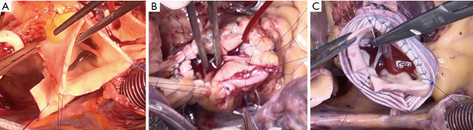
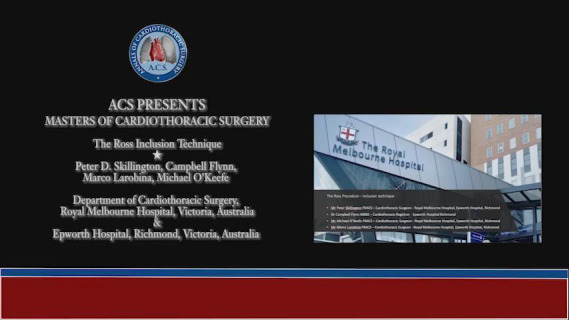
▶4-2. Prosthetic inclusion — 4つの流派
① Brussels式（de Kerchove / Jahanyar）— Cardioroot、交連高でサイズ決定
- Cardioroot（Getinge）を選好する（Valsalva graftより硬く、円錐状の流入部で調整しやすい）
- サイズは肺動脈弁交連の高さ（基部リング→交連先端）で決める。通常28mm、稀に30mm
- Valsalva部より下のskirtを除去し、管状部を遠位大動脈吻合の高さに合わせて切る
- autograftをgraft内に入れ、3本の交連縫合をValsalva部遠位端に仮置き → 近位autograftを4-0連続で固定
- Dacron包埋したautograftを、3本の連続4-0で交連間ごとに大動脈弁輪へparachuteする
- 交連は常にまずneo-STJレベルに置き、遠位の交連付着位置を後から調整して最適な弁形態を得る
- El Khoury "tongue" technique：graftを電気メスで切開し、同じ高さでautograftを新冠動脈開口部の上縁で切開して、PA組織の下側のtongueをDacronの開口部から引き出す。露出が良くなり吻合下面が滑らかになる。むき出しのDacronは左冠尖を傷つけるため重要である
- 形態評価を3段階で行う（back tableでgraftに縫着した時／弁輪に縫着した後／冠動脈再建後）。前2段階なら交連を調整できる
- 102例（2005–2020）、院内死亡ゼロ、早期再手術1例、5年以内3例（全例neo-AV修復）
「この手技にはラーニングカーブがある。Dacron-autograft inclusionはneo-AVの幾何学を歪め、弁尖prolapseを起こしうる。大動脈を再遮断してprolapseを修復する必要が生じうる。」 補強の代償を最も率直に書いた一文である。「Dacronで包めば安全」ではない。
② USC式（Starnes）— straight PET、＋2mm、小弁輪では包まない
- 2001年に導入。straight vascular conduit（PET）、autograft径＋2mm
- 弁尖のすぐ下でautograftをgraft内に固定 → 遠位autograftをgraftに固定 → wrapped autograftをLVOTに連続縫合 → 冠動脈ボタン再建 → 近位吻合
- 成人二尖弁にRossを断ったことは一度もない（大動脈弁形態・病態・上行瘤の有無を問わない）。除外は肺動脈弁異常と複雑な結合組織疾患のみ
- ⚠️ 例外：小さい（19〜21mm）大動脈弁輪の場合はwrapしない
- 成績（成人BAV 129例、中央値10.3年）：autograft失敗 wrapped 3例（5.2%）vs unwrapped 25例（35.2%）。10年再介入累積発生率 4.0% vs 26.8%（SHR 0.28, P=.035）。10年生存 100% vs 95.6%（P=.15）
この「19〜21mmの弁輪は包まない」という例外は重要である。補強の目的は拡大の予防であり、拡大の余地がない小弁輪では、包むことによる狭窄・歪みのリスクが上回るという判断になる。
③ Leiden式（Schneider & Hazekamp）— Valsalva graft、＋2mm、"scalloped"
- autograft近位径を計測（例 26mm）→ 2mm大きい（28mm）Valsalva graft。近位を1リング残してトリム
- 交連の下で3本の5-0でautograftをgraftに近位固定 → その3本で連続縫合
- 遠位は交連の高さと正確な位置を慎重に評価し、各交連を別々の5-0でgraftに固定する。ここは非常に慎重に。歪みは後のautograft閉鎖不全を招く
- 3つのValsalva洞をすべて切除（"scalloped"） → 遠位縫合線を3本の別々の5-0連続で。各縫合は2交連の間の最深点から開始する（misalignmentと歪みを避けるため）
- 再植込み後にwater testで配置を確認する
- LVOT側は3本の4-0を冠動脈再建がしやすい位置に置き、連続縫合。針が弁組織に届かないよう注意
- 電気メスでgraftに孔を開けて左冠を再建 → 遠位吻合 → 右冠は最後（元より高い位置に来るため）
「この再植込み法は全例に可能ではない。graft径が身体成長を妨げてはならないので、autograft wrappingと再植込みは（ほぼ）成長の完了した患者にのみ適用できる。」 prosthetic inclusionの最大の弱点である。成長期の患者では、この系統は選べない。
④ Wroclaw式（Jasinski）— cylinder-within-a-cylinder（冠動脈を剥離しない）
- 弁輪内に18本の単結節・非pledgeted 2-0 Ethibondを心室大動脈接合部の水平面に置く。無-左交連の線維性subcommissural triangleの底部から開始 → 左洞を時計回り → 左右交連間で深く → 右洞は心室中隔で水平面を保つため上部心室大動脈接合部の5mm下に → 無-右交連。糸を引き離して膜性中隔を同定してから刺入する。無冠洞は基部の非対称と軽度の傾きを補正するためやや高く置く
- 冠動脈洞をトリムしてmini-rootを作り、垂直牽引下に引き下ろして結紮する
- cylinder-within-a-cylinderが形成される
- 第2の流出路縫合線を5-0連続で、内側から一貫して操作する
- 利点として明示：「冠動脈を剥離する必要がなく、早期リスクが有意に減る」
冠動脈ボタンを作らないという発想は、第1章の冠動脈pitfall（kinking・動的閉塞・LAD閉塞）を根本から回避する。冠動脈合併症の裏返しとして生まれた術式と読める。
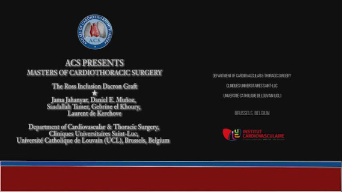
▶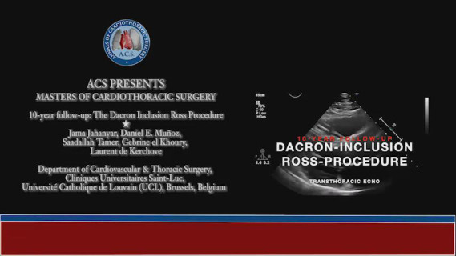
▶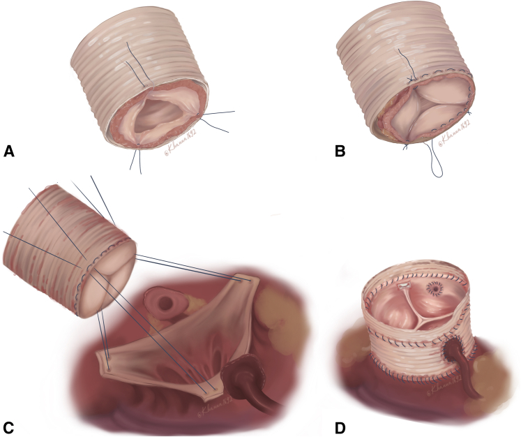
動画4-4 The Ross reimplantation technique（Schneider A, MMCTS 2017、図6点付き）→ mmcts.org/tutorial/828（購読制）
動画4-5 Stentless cylinder-within-a-cylinder reimplantation（Jasinski M, MMCTS 2022）→ mmcts.org/tutorial/1773（購読制）
4-3. 「幾何学を測る」5つのバリエーション
inclusion系の本質的な難しさは、柔らかく潰れるautograftの幾何学を、縫う前に確定できないことである。ここに対する5つの独立した解が2022〜2026年に相次いで報告された。この節が本レビューで最も新しい部分である。
① Eversion for stabilization（El Arid, Tours）— 反転して内側から見る
- autograftを「en doigt de gant」＝手袋の指のように完全に反転させ、Hegar dilator上で安定化する
- 反転して内腔から見るとSTJが「わずかに隆起した肥厚したautograft壁のridge」として明瞭に同定でき、マーカーで描ける。virtual basal ringも描く
- clipレベルでのSTJ↔︎basal ring距離 ＝ 選ぶValsalva graftの直径
- 近位縫合線は結節3-0 coated polyester（連続縫合はneo-aortic逆流と有意に関連しうるため）
- 冠動脈ボタンは5-0で3層すべてを含めて縫う
- 15例、CPB 223±17分、遮断181±15分、術後ARは全例mild未満
② Root pressurization before implantation（Dafflisio / Emani, Boston）— 植込み前に「動く弁」を見る
これが最も踏み込んだ解である。縫う前に、autograftを生理的圧で加圧して弁が閉じるところを直視する。
- autograft遠位（交連の3〜4mm上）に上行用Dacron graftを5-0連続で延長する
- 心筋保護液ラインに1/4インチチューブと三方活栓を追加し、灌流技師が全血で圧規定灌流する
- まず40〜60mmHgで加圧 → 心室側から弁尖の接合を直視する。中心性のごく軽度逆流は正常。交連部に逆流ジェットが出たら、減圧した状態でsubcommissural plication糸をかける
- root補強graft（Valsalva選好）のサイズ ＝ 術前CTの肺動脈STJ径 ＋4mm（PA壁厚1〜2mm＋心周期中の基部拡張1〜2mm分）
- root graftを被せた状態で60〜80mmHgに再加圧 → autograftがgraft内でどの平面・高さに座るかを調整する。必要なら弁輪plication糸
- 最適配置が決まったら、加圧したままautograft近位端をroot graftに結節5-0で固定し、交連位置をマーカーで記入して減圧する
- 血腫予防のためroot graft遠位端は結節縫合で間隔を空けて固定する
加圧のメディアは生理食塩水でなく全血である。理由が3つ明記されている：①食塩水では遠位縫合線から漏れる ②全血なら同時に出血評価もできる ③弁尖内皮への酸素供給。4例、術後neo-ARなし/trivial、合併症ゼロ。
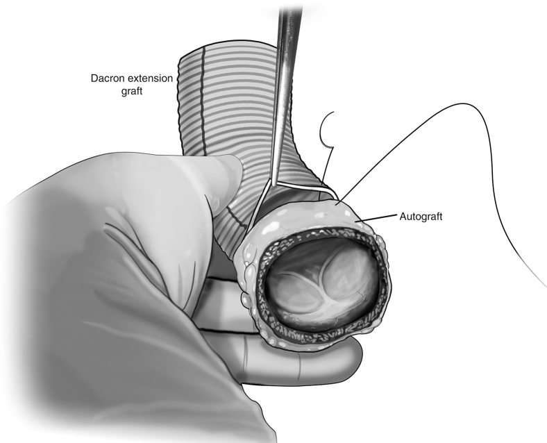
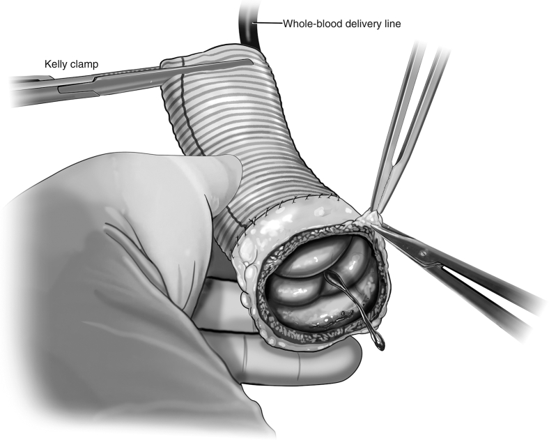
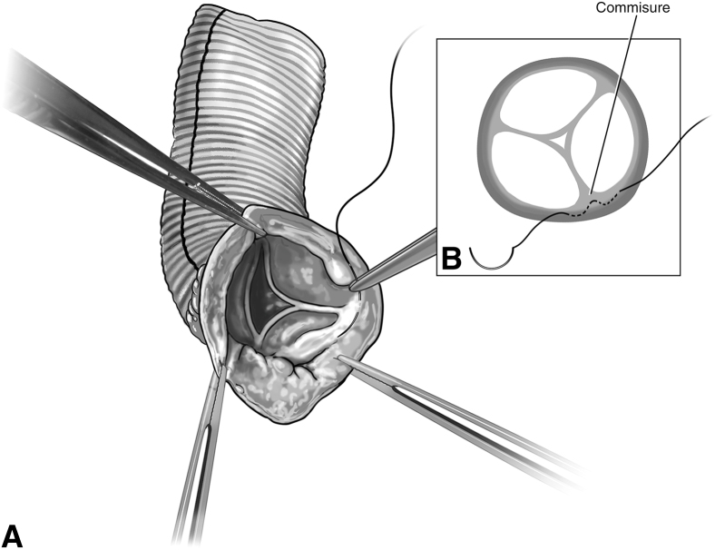
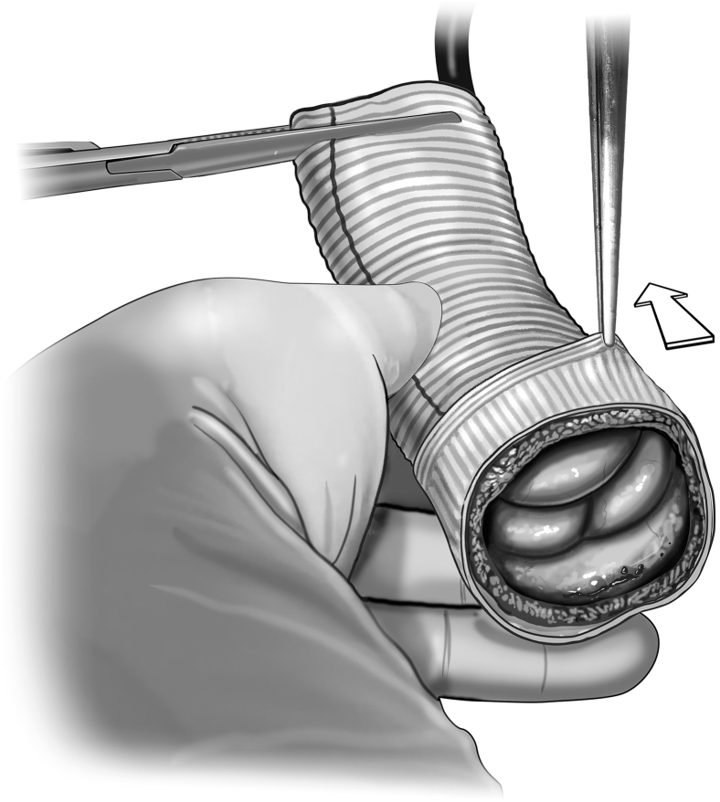
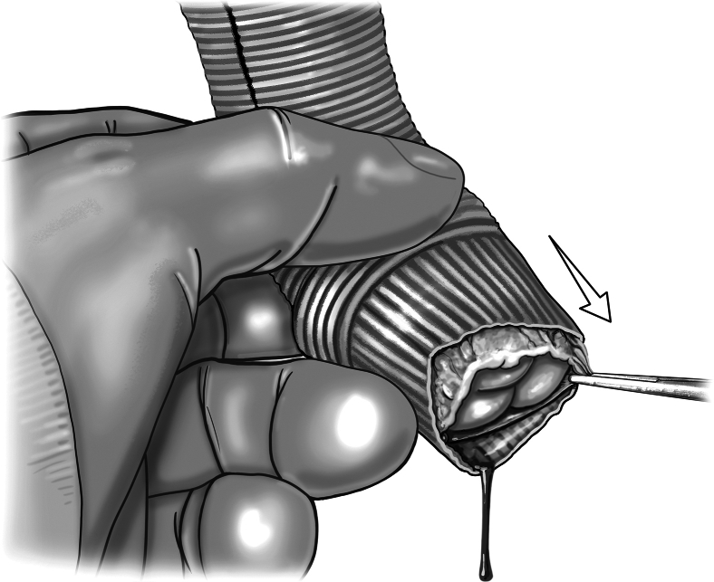
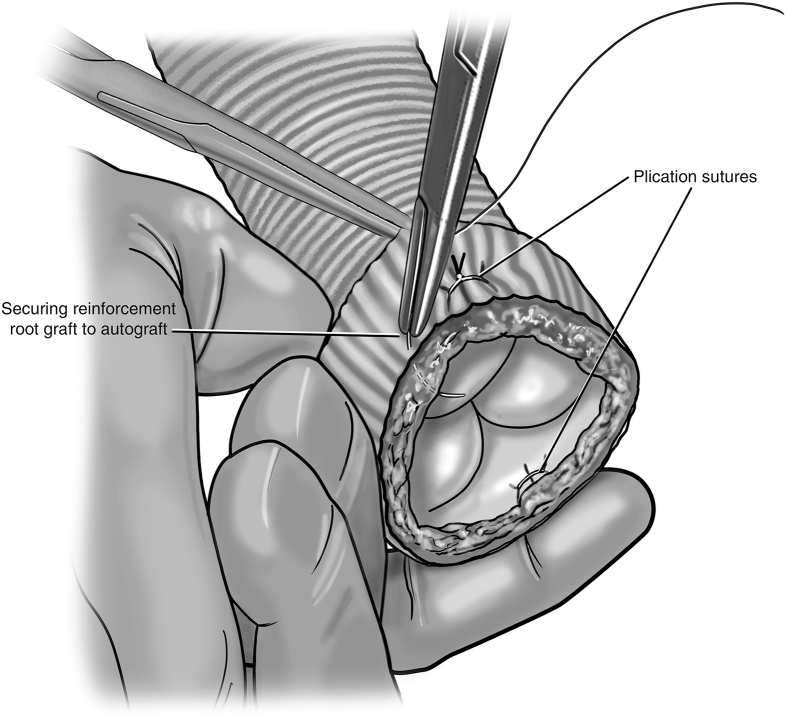
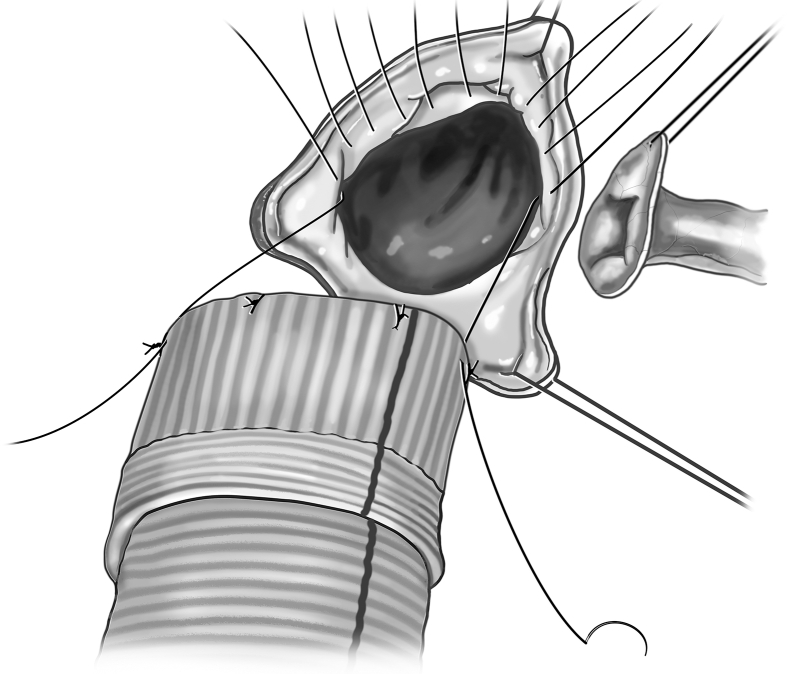
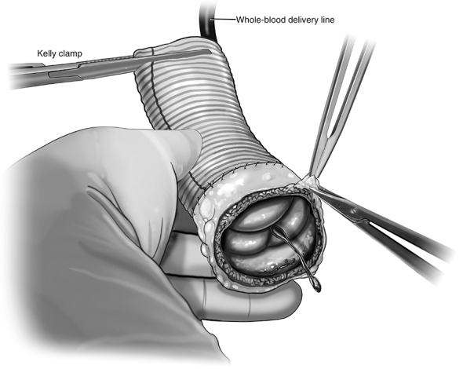
▶③ Reversed graft interposition（Kawamura, 川崎幸病院）— 柔らかいautograftを「張る」
- 別テーブルで、autograftのSTJ直上に人工血管をあらかじめ連続吻合する（各洞に3本の別々の糸、5-0モノフィラメント）
- 人工血管の遠位端を内側に折り込む → 弁輪が拡張されて丸い形状を保ち、視野が広がり、均等な縫合糸配置と正確な交連整列が可能になる。止血の評価もできる
- 弁輪に22本の単結節縫合。基部リング円周をautograft洞比で正確に三分割してマーキングする
- テスト後に人工血管を引き抜いて、実際の使用位置に置き直す（遠位吻合に使う。high takeoffの右冠は人工血管に吻合する）
- 注意：引き抜く際に弁尖を傷つけないよう最大限の注意を払う。ただしwoven Dacronは柔軟で順応性が高く、挿入・抜去時の外傷リスクは小さい
- CPB 253分、遮断208分、術後trivial AR
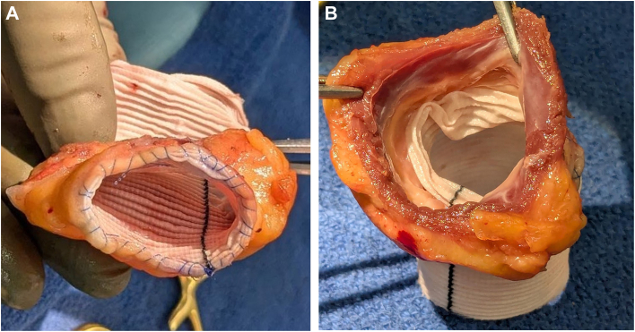
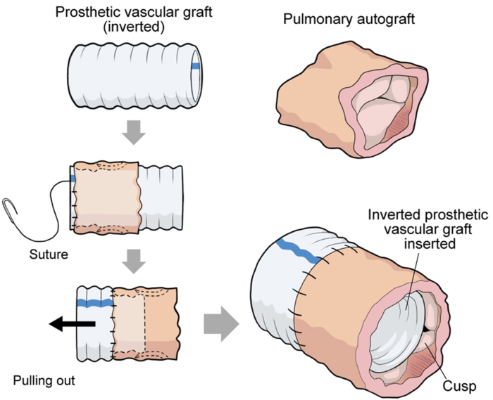
④ 2F technique（Farhat, Lyon）— David I ＋ 3F stentlessのハイブリッド
- PA壁を3mm残して切除する（Davidと同じ発想）→ 冠動脈ostiaをDacronに直接再建できる
- straight Dacronを2mmオーバーサイズにする（bulge内での位置決め問題を避けるため）
- 3本の5-0を3つの弁交連下三角の中央に置き、連続縫合でautograftの筋をDacronに固定する
- 各交連をTeflon felt付き4-0 U字縫合でDacronに固定する（＝3F stentless弁の植込み法）
- autograftが短くて上行大動脈全体を置換できない問題も同時に解決する
- 6例、遮断102分（この節の術式で最短）
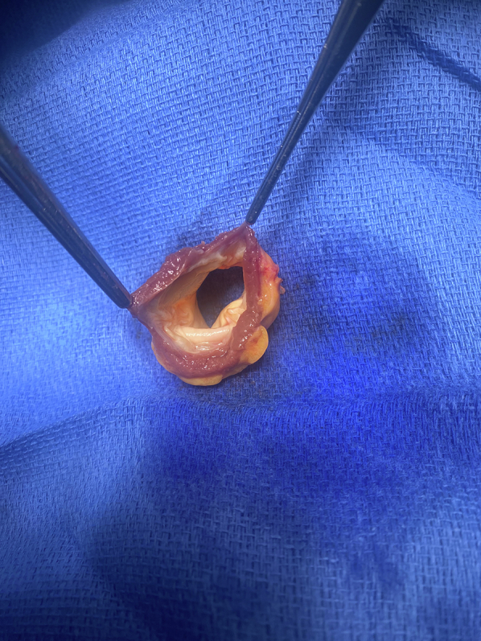
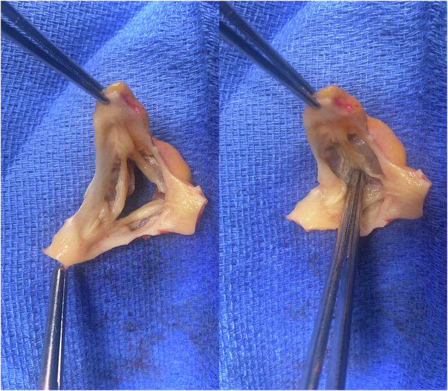
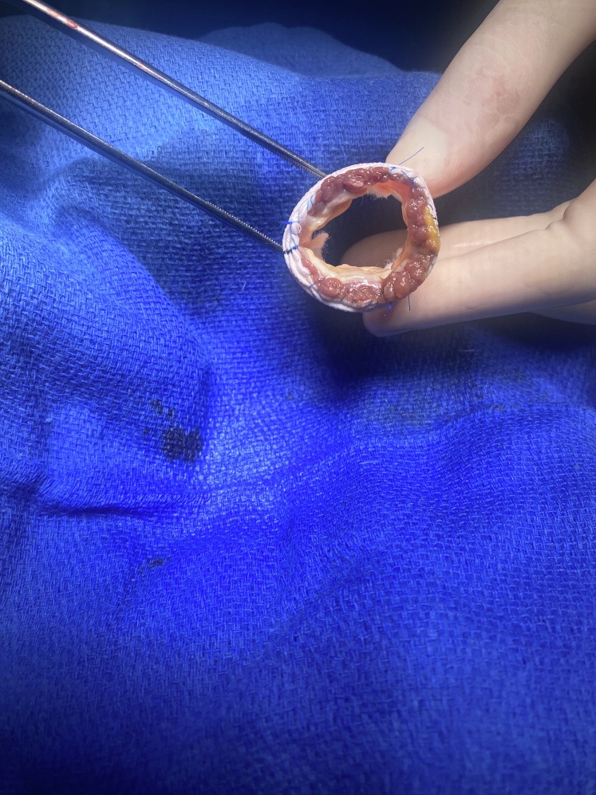
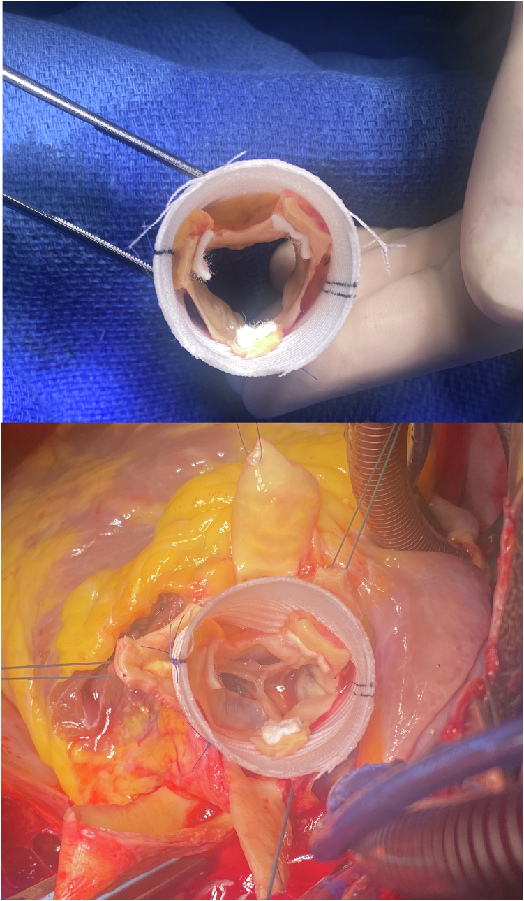
⑤ Beating-heart harvest ＋ anti-commissural plication（Zhu & Woo, Stanford）
遮断時間の短縮と、弁尖にやさしい幾何学の2つを同時に狙う。
- 心拍動下・CPB下で肺動脈弁下の漏斗部を切開し、PVから3mmの距離を保ちながら曲線状に切離する。第1中隔枝のすぐ上の層を保つ
- 26mm straight PET graft内にautograftを収め、subannular縫合線を5-0連続、交連を吊り上げてgraftに固定する
- ACP（anti-commissural plication）を交連レベルで行い、neo-STJ径を縮小する。graftを交連間で交連の高さに約2mmの水平マットレス縫合でplicateする
- 合計30〜60分の遮断時間短縮
- 採取時、各肺動脈弁尖付着部のnadirより近位に最低2mmの右室組織を残す
ACPの生体力学的根拠（Zhu, JTCVS 2023 — 3Dプリント左心シミュレータ）
ブタautograft 7例 ＋ ヒトautograft 5例（心移植レシピエント心・不使用ドナー心から採取）＋ 無補強ブタ5例（対照）で、ex vivoに検証している。
| 指標 | ACPあり | ACPなし | P |
|---|---|---|---|
| 弁尖 rapid opening velocity | 3.9 cm/s | 5.9 cm/s | .03 |
| 弁尖 rapid closing velocity | 1.9 cm/s | 3.1 cm/s | .01 |
| relative rapid opening force | 4.6 | 7.7 | .03 |
さらにinclusion法は対照（無補強）に比べてautograft逆流が有意に低下していた（P<.01）。ex vivo条件ではPET graftはautograft径より6〜7mm大きいものを選択している（ACP後の最終径がautograftの交連レベル径とほぼ一致するため）。
補強の議論はこれまで「基部が拡大しないか」だけで行われてきた。Zhuのシミュレータデータは、ACPを加えると弁尖の開閉速度と力が下がることを示した。補強は径を抑えるためだけでなく、弁尖の機械的負荷を減らすためにも意味を持つ。
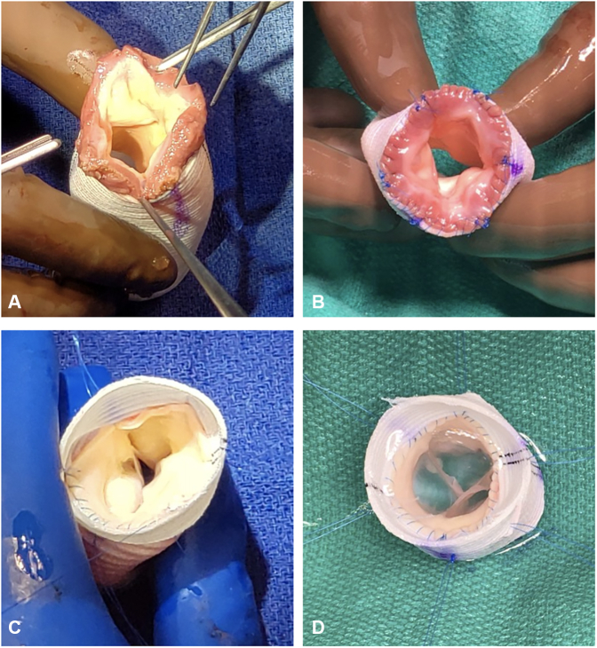
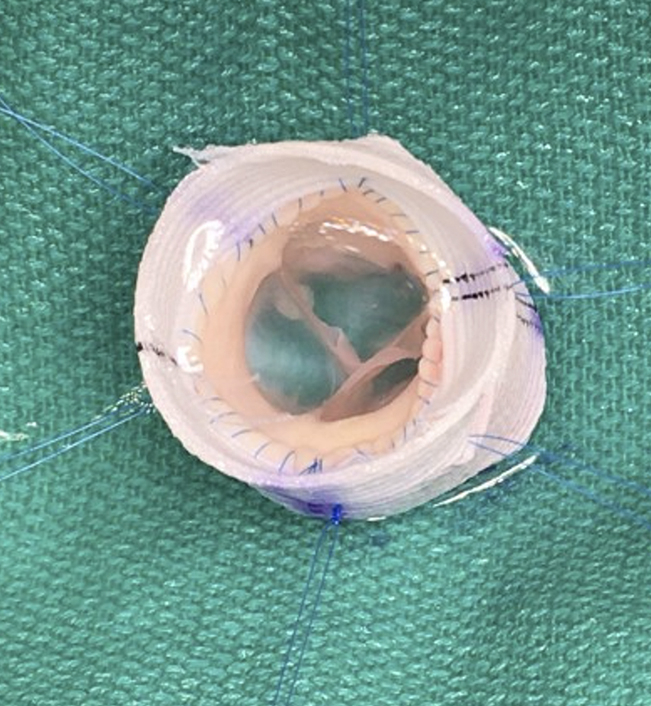
▶ACP付きinclusionの手技を12コマで追える最良の図だが、当該論文のPMC版はNIH author manuscriptでCCライセンスが付与されていないため、本レビューには掲載していない。原典（J Thorac Cardiovasc Surg 2023;165(3):e103-e116, Figure 1）を参照のこと。
第5章 弁輪形成・STJ・geometric mismatch
5-1. まず押さえるべき陰性所見：subcommissural plicationは効かない
Mazine & El-Hamamsy の指摘が本章の出発点である。
ARにおける問題は弁輪の「線維性」部分ではなく「筋性」部分の拡大にあり、subcommissural縫合はそこに届かない。だからAV修復でも無効であったのと同様に、Rossでも遅発性autograft失敗を防げない。
この一文は、過去の陰性データの解釈を変えてしまう。Davidらが「弁輪拡大は外科的に対処できない、早期autograft変性のマーカーだ」と結論したのは、当時の対処法がsubcommissural plication＋部分Dacronリングだったからである可能性がある。 手段が効かなかったことを、問題が解決不能であることと混同していたかもしれない、という読み方になる。
なお第4章で見たように、Boston（Dafflisio）は加圧下で交連部にジェットが見えた場合に限ってsubcommissural plicationを使う。「弁輪拡大の対策として使う」のは無効だが、「特定の交連部逆流を治す局所手技として使う」のは別問題である。この区別は文献間の矛盾を解く鍵になる。
5-2. 弁輪安定化の選択肢とサイジングのルール
同じ目的（弁輪を目標径に固定する）に対して、7通りの流儀がある。注目すべきは「何を測ってサイズを決めるか」が施設ごとに全く違うことである。
| 方法 | サイジングのルール | 出典 |
|---|---|---|
| 外部リング（CORONEO Extra-Aortic） | リング径 = 肺動脈弁輪径 ＋8mm −2mm（＋8mm＝術後長期のPA弁輪径との実測差の中央値、−2mm＝弁尖接合を増やすため）。5本のpledgeted mattress糸をLVOT内から外へ。CORONEOは31mmまで、それ以上は管状Dacronからリングを切り出す | Myjavec, EJCTS 2024 |
| 円形Dacronリング（Mount Sinai / Montreal） | 6本のpledgeted 2-0 Ethibondを基部リングの水平面（cuspのnadirの約2mm下）に内→外。膜性中隔部の糸だけ1〜2mm高くして刺激伝導系を避ける。肺動脈弁輪径に一致するHegarをLVOTに入れ、5〜6mm大きいDacronリングをHegarの周りで結紮。目標径は性別とBSAから「正常な大動脈弁輪径（20〜25mm）」を狙う | Mazine ATS 2018 / Basmadjian JTCVS 2016 |
| ePTFE suture annuloplasty（Homburg） | 患者BSAでHegarを選ぶ（BSA<1.8 m²→21mm、≥1.8 m²→23mm）。autograft実測径は参照しない | Matsushima, ATS 2019 |
| 部分ポリエステルバンド（Melbourne） | 目標径を性別と体格で決める（男24〜26mm、女22〜24mm）。発動基準はnative弁輪が女>23mm・男>25mm | Skillington JTCVS 2015 / Caldaroni JTCVS 2025 |
| Florida sleeve式subannular縫合 | bulged root graft径 = autograft弁輪径（Mosaic sizer）＋3mm | Spindel, JTCVS Tech 2024 |
| double expansible ring（Paris / Halifax） | Hegar実測から表で決定（弁輪25〜27→リング29mm、28〜30→31mm、≥31→33mm）。Hegar実測より約2サイズ大きくして狭窄を避ける。STJリングは25〜27 / 27〜29 / 29〜31mm（autograftのneo-STJ径による） | Côté, JTCVS Tech 2025 |
| フェルトストリップ（Stelzer） | 実測したフェルトストリップでneo-aortic弁輪を拘束、中期以降は2本目をSTJに | Stelzer, JTCVS 2021 |
① autograftを測る派（Mount Sinai: PA弁輪径＋8−2mm、Spindel: autograft弁輪径＋3mm、Côté: Hegar実測＋2サイズ）／② 患者体格を測る派（Homburg: BSAだけ、Melbourne: 性別＋体格）／③ 交連の高さを測る派（Brussels: 基部リング→交連先端の距離、El Arid: STJ↔︎basal ring距離）。 Mazineは②を「径の異なるautograftを歪めうる」と批判し、Homburgは①を採らない。この対立は未解決である（第11章 対立点#3）。ただしDavidの「正常な大動脈弁輪は大柄でも25mmを超えることは稀」「BSA 2 m²超では頭打ち」（第1章）は②の側の根拠になる。
5-3. 外部リングは本当に「動き」を殺していないのか（Basmadjian 2016）
外部リングへの最大の懸念は「基部のdynamismを失う」ことである。Montrealの50例（うちRoss 18例、Dacronリング39・ExAoリング11、リング径中央値28mm）がこれを直接測っている。
- 収縮期 27.9 → 23.6mm、拡張期 24.8 → 20.3mm（いずれもP<.001）、2年まで安定
- 収縮期の弁輪拡張（16%）が術後早期に保たれ、2年後も保存されていた → 「動きを殺していない」ことの実証
- 懸念されていたDacronリングの経時的拡大は起こらなかった（上行大動脈導管としてのDacronは18ヶ月以内に最大20%拡大することが知られている。リングでは起こらない）
Myjavecが記載する経時変化も実務的に重要である。術直後に劇的に縮小 → 最初の3ヶ月でやや拡大（近位吻合に取り込んだPA筋rimが萎縮するため）→ 以後安定。
術後3ヶ月のエコーで弁輪径がやや増えるのは予期された生理である。取り込んだPA筋のrimが萎縮する分だけ大きくなる。これを知らないと「補強が失敗した」と誤読する。
5-4. STJと上行大動脈 — 閾値が30mmから50mmまで開いている
autograft側の処理は施設間でほぼ一致している：交連上のPA組織を2〜3mmまで切除する（Mount Sinai / Melbourne / Boston 共通）。
問題は大動脈側である。
| 施設 | 上行大動脈への介入閾値 |
|---|---|
| Homburg（Schäfers） | >30mm でDacron置換（BSA<1.8→24mm、≥1.8→26mm） |
| Mount Sinai（El-Hamamsy） | ≥38mm で26〜28mm interposition graft |
| Montreal | >38〜40mm |
| Melbourne（Skillington） | >38〜40mmでtailoring、置換は男性>45mm・女性>40mm。術前STJ 26〜32mmなら上行の縦切除＋直接閉鎖（tailoring aortoplasty）で人工物を使わない |
| Mount Sinai（Stelzer） | >50mmで置換、それ未満はaortoplastyで縮小。目標<35mm |
同じ「Mount Sinai」で38mmと50mmが並立している点に注意。この閾値は病態から導かれた数字ではなく、術式の設計思想（人工物をどこまで使うか）から逆算された数字である。
Côtéが提案する第3の道 — 上行を置換せずSTJだけ固定する
拡大していない上行大動脈をSTJ安定化のためだけに置換する代わりに、STJリングを使う。 Dacron管が不要になり、大動脈のコンプライアンスを保ち、遠位吻合をなくし、基部と上行の内皮の連続性＝内皮機能を保てる。
STJリングは5本のpledgeted 2-0を各交連に1本と各冠動脈の上に1本置く。native無冠洞と左-右交連をリングにtackする。弁輪リングとSTJリングの2本立て（double expansible ring）になる。
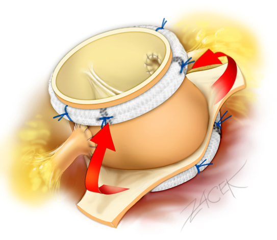
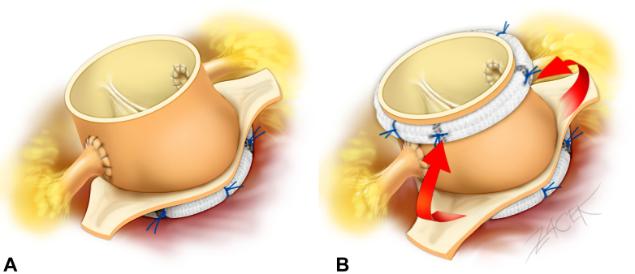
オーバーサイズgraftが失敗を作った実例
Skillington 2015の失敗例2例の原因は「上行大動脈を28mmのオーバーサイズのポリエステルgraftで置換した」ことだった。上行を置換する場合、STJ側に合わせなければneo-STJが引き伸ばされて逆流を作る。 「大きめに入れておけば安心」は成立しない。
5-5. 幾何学的mismatchへの古典的対応
Klena（J Heart Valve Dis 2000）の "annuloplasty and aortoplasty" が、geometric mismatchに対する最初期の体系的記載である（抄録のみ入手、廃刊誌）。現在の弁輪形成・STJ調整のすべての原型として位置づけられる。25年前に「弁輪とSTJの両方を調整する」という枠組みが既に提示されていた。
第6章 RVOT再建 — 「アキレス腱」
Ross手術の再介入の半分近くは、autograftではなく右心系で起こる。しかもこちらはカテーテル治療で解決しうるため、外科側の目標は「経皮的再介入が可能な形で作っておくこと」に移る。
6-1. 凍結保存肺動脈homograftがなぜgold standardか
Skillingtonの整理が最も明快である。
- 肺動脈中膜は大動脈homograftより組織あたりカルシウム量が有意に少なく、弾性組織も少ない → 長期の石灰化回避に有利
- 筋skirtがあるため、autograft採取後の空間に解剖学的に完璧にフィットし、採取床の止血にも寄与する
- Melbourneの方針：「適切な肺動脈allograftが得られないならRossを提供しない」
- 米国では2022年のRoss用肺動脈導管の83%超がhomograft（Scorsese）
6-2. 手技の細部（Skillington）
- 筋skirtを3〜4mm幅にトリムする（筋を少なくすると免疫反応が減り、導管圧較差が下がると推定されている）
- ※ Réa（Curitiba）は0.5〜1cmのrimを残す。Saidは記載なし → トリム量にコンセンサスはない（第11章 対立点#10）
- 遠位吻合：5-0連続、orthotopicに植える
- 近位吻合：4-0連続、allograftの後尖に隣接するscallopのnadirをRVの後方吻合縁の中央に合わせる。完成前に右心系をdeairする
- 導管の捻れ（twisting/torsion）は何としても避ける
- タイミング：遮断下に、autograft近位吻合の後・冠動脈再建と遠位吻合の前
- ※ Schneiderは近位吻合を遮断解除後の心拍動下に行い、心膜ストリップで補強する（後方は筋組織が脆弱なので特に重要）
- 抗菌薬：allograft筋・保存液・洗浄液を細菌培養に提出し、培養陰性確認まで、または48時間投与。筋の培養が陽性なら4週間の静注。洗浄液の陽性は汚染とみなす
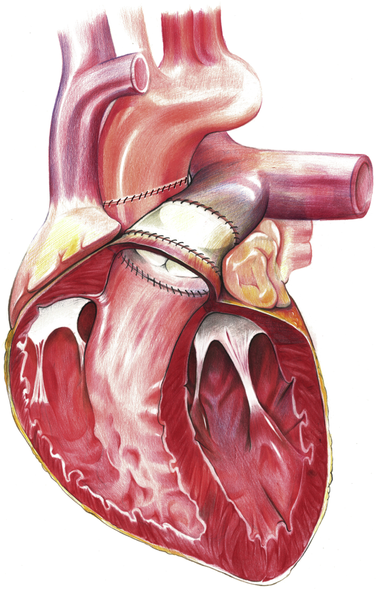
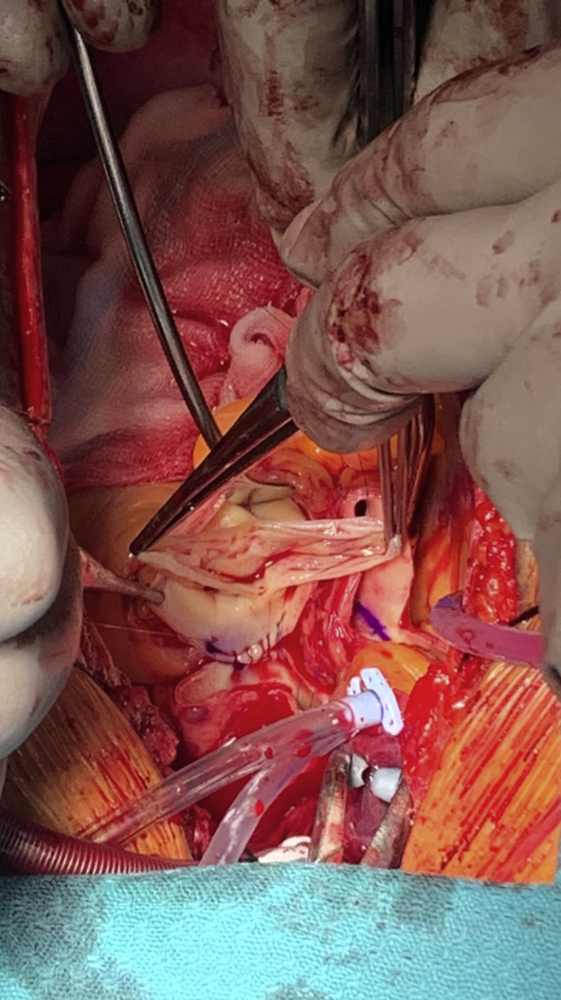
6-3. 脱細胞化homograft — 2つの大規模データ
Curitiba（Réa 2025, 414例, 単一術者 1995–2024）— 最長のフォロー
- 脱細胞化 253例（中央値9.1年）vs 凍結保存 161例（中央値20.4年）
- プロトコル：新鮮homograftを滅菌直後に0.1% SDS溶液で37℃・24時間振盪、PBS中4℃で最大90日保存（ブラジル特許 PI0800603-2）
- 15年時点の機能不全の累積発生率は同等（12.4% vs 11.2%）
- しかし経時的な最大圧較差は脱細胞化群で低い（β=−2.99, P<.001）
- 15年時点の再手術の累積発生率は 1.2%（脱細胞化）vs 6.8%（凍結保存）
- 凍結保存群では年齢とhomograftサイズが狭窄のリスク因子だが、脱細胞化群では年齢のみ
- さらに：脱細胞化ヒト心膜による近位「conical extension」（39例）で late peak gradient がさらに低下した（直接吻合比 β=−6.37、anterior hood比 β=−7.44）
Canadian Ross Registry（Chauvette 2022, 466例, 6施設）— 早期のrisk profile
- 全例に脱細胞化凍結保存homograft（SynerGraft, CryoLife）、中央値2.2年（最長8.5年）、99%完遂
- 6年での機能不全累積発生率 11±2%、そのうち狭窄が93%（形態学的には導管に沿った狭窄が59%）
- 6年での再介入累積発生率 3±1%
- 瞬間リスクは術後1年目が最大（3.5%/年）で、以後<1%/年に低下
- 年齢<45歳が唯一の独立リスク因子（HR 3.1, 95%CI 1.1–8.6, P=.03）
- homograftは（入手可能な範囲で）系統的にオーバーサイズしている
Skillingtonは「中期成績を比較しても脱細胞化に明確な優位性はなく、コスト・入手性の問題もあるため従来の凍結保存を継続する」と明言する。一方 El-Hamamsy / Stelzer（2008年以降>99%）/ Réa は脱細胞化を標準としている。 Réaのデータ（15年再手術 1.2% vs 6.8%）が現時点で最も強い反論材料である。ただし機能不全の発生率自体は同等（12.4% vs 11.2%）で、差が出たのは「再手術に至るか」であることに注意（第11章 対立点#5）。
6-4. homograftが手に入らない世界への解（Said, MMCTS 2025）
日本を含む多くの国では肺動脈homograftが実質的に入手できない。Saidは4つの選択肢を同一tutorialで対比している。
- 標準的肺動脈homograft
- hand-made valved conduit — Dacron graft内に標準的な大動脈生体弁を4-0連続で固定する。生体弁のsewing ringを吻合線に含める必要はない。近位端をbevelしてRVへ
- Freestyle xenograft — やや短いので短いDacronで橋渡しする。相対的に硬いので心停止中に近位吻合ができる
- pulmonary Ozaki — 前胸壁心膜シートを0.6%グルタルアルデヒド10分処理 → 生食で6分×3回洗浄。Ozaki AV sizerでneo-PV弁尖のサイズを決定（症例では3尖とも29mm）。RVOT Dacron graftの内側にneo-commissureをマークして4-0連続で縫着する
同tutorialのtips
- 補強Dacronはautograft近位径 ＋4mm
- 近位端を固定した後にDacron graftを反転させると、遠位端を固定でき、加圧下で弁機能を確認でき、上行置換を伴う場合に遠位縫合線を1本節約できる
- 冠動脈ボタンは3層すべてを含めて5-0連続
- 右冠動脈ボタンは遠位大動脈吻合の後壁縫合線を完成させてから（基部の回旋を防ぐ）
Said（RVOT側）、Kawamura（autograft STJ側、第4章）、El Arid（autograft自体を反転、第4章）が、いずれも「反転させると縫いやすく、加圧試験ができ、縫合線を節約できる」と述べている。共通する道具立てとして覚えておく価値がある。
動画6-1 Modified Ross procedure with four different strategies for RVOT reconstruction（Said SM, MMCTS 2025、4手技を1本で対比、14分）→ mmcts.org/tutorial/2005（購読制）
動画6-2 Technique of pulmonary allograft preparation and anastomosis（Skillington, JTCVS Tech 2021, Video 3）→ jtcvs.org（オープンアクセス）
動画6-3 標準化されたhomograft植込み手技（Chauvette V, JTCVS 2022, Video 1）→ doi.org/10.1016/j.jtcvs.2020.06.139
6-5. 再介入の閾値と方法
| Melbourne（Skillington） | Curitiba（Réa） | |
|---|---|---|
| 機能不全の定義 | — | 最大圧較差 ≥40mmHg または 中等度以上のPR |
| 再介入の適応 | 平均収縮期圧較差 ≥36 mmHg、または重症PR＋（症状／RV機能低下／RVEDVI >140 mL/m²／MRIでRV:LV容積比 >1.8） | 症状・最大圧較差 ≥50mmHg・重症PR・RVサイズと機能・活動性心内膜炎の組合せで個別化 |
- 経皮的治療（バルーン・TPVI・遠位吻合部狭窄へのステント）が第一選択
- 外科的再介入を選ぶのは：導管の収縮、左主幹–allograft間距離 <3mm、高度石灰化、心内膜炎
- 再手術ではstentless porcine rootを選好する（心内膜炎を除く）
- 初回手術で心膜を閉じるか人工膜で覆っておくと再開胸が速い（Stelzerも同旨）
・左主幹とallograftの距離を3mm以上確保しておく（近すぎるとTPVIが選べなくなる） ・心膜を閉じる／人工膜で覆う（再開胸を速くする） ・RVOTには将来のvalve-in-valveを見据えて大型のstented生体弁（第8章、Mayoの方針） Ross手術は「40年もたせる手術」ではなく「再介入を織り込んで設計する手術」である。
第7章 特殊状況
7-1. 二尖・四尖肺動脈弁 — 最大の実務的対立
| Montreal（Filippa / Demers） | Melbourne（Skillington） | Stony Brook（Scorsese, 総説） | |
|---|---|---|---|
| 方針 | 個別判断で使用可 | 使用しない | 「autograftとしての使用を妨げうる」 |
| 頻度 | 640例中11例（1.7%）、二尖8・四尖3 | 「cuspal asymmetryを含め最大5%」 | 記載なし |
| 結果 | 7例で使用（4例は断念）。1例が術後6日目にcusp prolapseでAR → 修復し8年再発なし。他は退院時AR≤1、中央値5年でAR≤1・全生存 | — | — |
| 手技上の要点 | 元の交連対称性を保つ（形態に応じて90°または180°に配置）、LVOT内に深く留置、ボタンに緊張をかけない | — | — |
Davidの数値的な線引き：「肺動脈STJが30mmを超える患者では、BSAによらずRossに消極的である」
そして最も実務的に重い所見がこれである。
Filippaの報告では、11例すべてが術中に初めて診断され、術前CMRを含む包括的画像では1例も指摘できなかった。 「肺動脈弁は開けてみるまで分からない」ことを前提に、術中に方針転換できる備え（代替弁の準備・患者への事前説明・同意）が必須である。Melbourneのように「二尖なら中止」という方針を採るなら、その中止がそのまま「予定外のAVR」を意味することを患者に説明しておく必要がある。
7-2. 大動脈弁形成術の失敗後のRoss（Abeln, Homburg＋Montreal 80例）
- 初回修復から中央値6.6年後にRoss。元の形態は一尖弁53%・二尖弁39%
- CPB 144分・遮断98分（初回Rossより短い）、周術期死亡・心筋梗塞・神経学的合併症ゼロ
- 10年生存 99%（年齢性別マッチ集団と同等）
- autograft再介入の累積発生率 8年で5.1%、しかも全例が弁温存手技
- 弁輪>26mm（23例）で外部annuloplasty（Montreal＝円形Dacronリング、Homburg 2010–2019＝ePTFE、Homburg 1997–2011＝心膜ストリップ）
修復後のRossは初回Rossより手術時間が短く、合併症もない。修復に挑戦してもRossの選択肢は失われない。 Sievers（German Ross Registry）も同じ発想を提示している — 「修復あるいはOzakiを先に行い、失敗したらRossというのは興味深いが未証明の戦略」。Abelnの80例は、その「未証明」の部分をかなり埋めている。
7-3. 何度も失敗した大動脈弁手術後のRoss（Loshusan, MMCTS 2024）
27歳男性、二尖弁。1年以内に2回の大動脈弁手術（AV修復 → 3ヶ月後に生体弁AVR）を受け、さらに1ヶ月後にpatient-prosthesis mismatchと重症PVLで心不全再発。12ヶ月以内の3回目の胸骨切開でRossを行った症例の12ステップである。redoのRossを設計する際の実務的な骨格として有用なので、要点を残す。
- 大動脈切開は低く横に置く — 後の遠位autograft吻合を見据え、autograftをSTJで可能な限り短く切れるようにする（将来の瘤化リスクとなる余剰組織を残さない）
- native STJが小さい場合は左右冠動脈ボタンをscallopして弁輪の露出を得る
- サイジング：29mm Freestyle sizerが容易に入った＝弁輪は拡大しており annuloplasty が必要と判断
- neo-annulusの再定義：発達の良い後方交連を基準にして、そこから120°の位置にneo-commissureを作り直す
- 基部を全周性に、basal ringのレベルまで外側から剥離してannuloplasty糸の場を作る
- autograft採取の勘所：3回目の開胸でも肺動脈は癒着が少なく採取は容易だった。剥離面をautograftの内側（medial）寄りに保つことで、左主幹を剥離面から遠ざけ、視野に入れずに済ませる
- 6本の2-0 ETHIBONDを弁輪下平面に、各洞に2本ずつ対称に置く
- autograftを4-0 Prolene結節縫合で右→左→無冠の順にLVOT深くへ。膜性中隔下に見つかった小VSDは近位autograft縫合線で一次閉鎖
- 32mm Dacron graftをannuloplasty ringとして、6本の糸を通して緩く結紮
- 冠動脈ボタンは各洞中央に6-0連続。autograftがしなやかなのでkinkや歪みの心配は少ない
- 28mm SynerGraft肺動脈homograft。近位のinfundibulum側の縫合は長く浅いbiteで第1中隔枝を避け、側方の深い刺入でLAD本幹を避ける
- 遠位吻合の前に上行大動脈径を測り、neo-STJが適切に狭いことを確認する（交連のsplayingを防ぐ）。残存無冠洞と左右冠洞間のbridge組織を遠位吻合の補強に使い、長期のautograft支持とする
結果：inotropeなしで離脱、術後平均/最大圧較差 6/11 mmHg・trace AI、POD 5退院。1年後NYHA I。
- 最も難しいのは「frozen aortic root」の剥離と、前回の人工物の完全な除去（debridement）である。完全にdebrideした後の手順は通常のRossとほぼ同じになる
- 肺動脈autograft自体は再手術例でも癒着が少なく、採取は初回と同程度。例外は前回のDacron root graftや大動脈homograftとautograftが融合している場合で、その場合は一塊に切除してから分離する
- 施設方針として弁輪径≥27mm、または有意なARがあれば外部Dacron ring annuloplastyを行う
7-4. 冠動脈奇形unroofing後のRoss（Verdi, Stanford）
17歳男性、右冠動脈が左冠尖から起始（ARCA）。unroofing＋左右交連の切離・再懸垂＋pulmonary arteriopexy を受け、直後からAIが出現。2回の弁形成を経て高度AIが再発した状態でのRossである。
なぜ難しいか（4点）
- unroofingで交連を切離・再懸垂しているためAIが生じている
- intramural courseの同定のため大動脈–肺動脈間が広範に剥離されている
- pulmonary arteriopexyで肺動脈が移動されている
- 長いunroofed RCAを再建しなければならない
実際の対処
- 胸骨再開時に移動された肺動脈を胸骨から慎重に剥離する
- 大動脈と右房に送脱血 → CPBを開始してから大動脈基部と肺動脈基部の間の剥離を進める（前回の2回の大動脈切開と剥離で高度に癒着している）→ 心停止後に肺動脈autograft内側面の剥離を完了する
- autograftはmodified inclusion techniqueで作製
- 左冠は正所性に、右冠はtunnelを分割してtranslocation
結果：POD 0抜管、POD 5退院、TEEでtrivial ARのみ。
7-5. Ross-Konno（Said, Ann Cardiothorac Surg 2021）
先天性大動脈弁狭窄・LVOTOに対する術式。autograftの筋skirtをそのままKonno切開のパッチとして使うという発想が中核にある。
標準Ross-Konno
- 採取時に、意図的に前方RVOT自由壁の筋skirtを長く付けて採取する（前方基部拡大のパッチになる）
- Konno切開の位置：右冠動脈の左側、または左右冠尖の交連付着部の間を心室中隔にかけて。切開の長さはautograftとnative弁輪のmismatchの程度で決め、subaortic stenosisの領域を越えて延ばす
- 切開は斜または横方向に、かつ三尖弁のmedial papillary muscleの左側に置く（刺激伝導系の損傷回避）
- 中隔myectomyやEFE切除はこの段階で行う
- autograftの筋は、Konno切開の再建に使う部分を除いてトリムする（残すとsubaortic obstructionの原因になる）
- 人工パッチによる中隔切開の再建は「好ましくない」：新生児・乳児では構築が複雑になり、硬さが増してneo-aortic基部前方の可動性を失わせる。加えてKonno切開は大動脈弁輪を断つため、パッチで再建すると基部の対称性とLVOTの幾何が損なわれる
- homograftの近位吻合は心内膜と心筋の部分層だけを取る（第1中隔枝の温存）。心膜ストリップで止血補強してよい。この位置には可能な限り大きなhomograftを使う
2つの改変
| mini Ross-Konno | modified Ross-Konno（2005年〜） | |
|---|---|---|
| 発想 | VSDを作らない | 切開を心室中隔から離す |
| 手技 | VSDの代わりに延長左室中隔myectomyを行い、subvalvular obstructionを全て除去。そのうえで大動脈弁輪をautograftに合わせて拡大 | 弁輪と左室自由壁を、左主幹の走行より後方で切開してLVOTを拡大する。左主幹ボタンをarterial switch同様に授動・剥離する必要がある。autograftは多数の結節pledgeted mattress縫合で植込む（安定性と止血のため） |
| 目的 | 標準Konno切開のリスクを回避 | 刺激伝導系損傷のリスクを減らす |
成績（Saidの整理）
- 早期死亡リスクは約10%、経験ある施設では<5%
- 早期合併症の大半は不整脈・伝導障害。術後心室頻拍が最大28%、房室ブロックは0〜6%
- LVOTO再発による再手術回避率は5年>95%・10年>90%
- 再手術の多くは新規に進行するARが原因
- 成功の鍵はautograftの正確で対称的な留置である。新生児・乳児では基部が小さくsubcoronary法は極めて困難
7-6. 低侵襲アプローチ — L字ministernotomy（Tsaroev）
- 末梢静脈脱血（大腿静脈）＋送血は別ルートとすることで、L字型部分胸骨切開でも視野が成立する
- autograft補強はautograftより2〜4mm大きいDacron graft、3本のanchoring sutureを交連間三角の底部に等間隔に（図4-2）
- 完成像（図7-11）は、限られた術野でもfull rootが完結することを示す
動画7-2 The Ross procedure for recurrently failed aortic valve procedures（Loshusan BR, MMCTS 2024、12ステップ・13分）→ mmcts.org/case-report/1962（購読制）
第8章 Autograft failure と再手術
8-1. 失敗の様式 — 「弁の劣化」ではなく「基部の幾何学の破綻」
- 弁尖は薄く柔軟なまま保たれることが多い。Skillingtonは摘出した全autograft弁尖に肉眼的変性がなかったと報告している
- Skillingtonの再手術11例のうち10例に同定可能な技術的失敗があった
- 4例：弁輪拡大を修正しなかった（1992–96年の症例）
- 2例：オーバーサイズの28mm graftで上行を置換した
- 4例：植込み時の歪みによるcusp prolapse
- 全再手術が7年以内（平均4.1年）に発生し、それ以降の失敗はゼロだった
- Caldaroni：最初の4例（root replacement）のうち2例（50%）が基部拡大で戻ってきた。inclusionに切り替えて以降はゼロ
もし失敗が生物学的劣化なら、時間とともに増える。初期に集中して以後止まるという分布は、原因が初回手術の技術にあることを示している。 逆に言えば、初回手術で幾何学を正しく作れれば、その後は安定する期待が持てる。
8-2. 稀だが致死的：autograft破裂・解離（Ramkaran, 11例のsystematic review）
| 項目 | 内容 |
|---|---|
| 発症年齢 | 中央値39歳（20–56） |
| Rossからの期間 | 中央値10年（6–18年） |
| 元の弁形態 | 11例中9例がnative二尖弁 |
| Rossの適応 | 8例が優位AR |
| 基部径 | 中央値55mm（50–90mm）。ただし60%は≤55mmで発症 |
| 症状 | 8/11が症候性、3/11は監視画像で偶発発見 |
| 診断 | 初回検査はTTEが45%、確定はCT 55%・MRI 27% |
| 病変の範囲 | 9/11がautograft基部に限局（冠動脈ボタン縫合線と遠位autograft縫合線が解離の進展を止める。ただし破裂のリスクは残る） |
| 治療 | 10例が手術（機械弁Bentall 4／生体弁Bentall 1／David-Yacoub 2／modified root remodeling 2／stentless porcine root 1）、院内生存100%。1例は術前に破裂して死亡 |
60%が55mm以下で発症している。 「大動脈瘤の55mmルール」をautograftにそのまま適用してはならない。とくに二尖弁・術前ARの症例では、監視間隔と介入閾値を個別化すべきである。手術に到達できれば院内生存は100%であり、問題は「見つける前に破裂すること」にある。
8-3. 再手術の実際 — 3つの大規模シリーズ
| Mayo（Stephens, 105例） | Mount Sinai（Stelzer, 83例89回） | Brussels（Jahanyar, 63例） | |
|---|---|---|---|
| 期間 | 1991–2021 | 1996–2020 | 2001–2022 |
| 初回Rossの施設 | 84%が他施設、大多数が無補強 | 75%が同一術者 | 76%がfree root技法 |
| Ross→再手術 | 平均10年前後 | 12.6±6.9年 | — |
| 4回目以上の胸骨切開 | 25% | 3%（3–4回目） | — |
| 主な適応 | autograft逆流 64% | autograft機能不全 68例 | 瘤のみ27%／瘤+AR 43%／AR単独30% |
| 手術死亡 | 5% | 2.2% | — |
| 遠隔成績 | 中央値6.3年で遠隔死亡13% | 再手術後生存 1/5/10/15年 = 94.6/87.4/82.3/77.5% | 生存 10年 92.4%、AV再手術回避 10年 79.7% |
| 遮断/CPB | 110±83 / 163±90分 | — | — |
| 輸血 | — | 28%のみ | — |
同時手技の多さが特徴的である：Mayo（autograft基部手術74%・大動脈手術35%・RVOT介入53%〈肺動脈弁置換35%・導管置換18%〉・三尖弁修復15%・僧帽弁11%・CABG 8%）、Mount Sinai（僧帽弁24件・三尖弁20件・心房細動アブレーション14件・冠動脈5件）。
20年経った患者は、三尖弁・僧帽弁・心房細動も抱えている。「autograft再手術」として計画すると手術時間と輸血の見積もりを外す。 Mayoの105例では53%でRVOTにも手を入れている。
Mayoの105例には、カテーテル治療の合併症による緊急手術2例が含まれる。1例は僧帽弁バルーン形成後の重症MR、もう1例はMelody経カテーテル肺動脈弁の植込みが左冠動脈閉塞を起こしたもの。第6章 6-5の「左主幹–allograft間距離 <3mm ならTPVIを選ばない」という基準が、なぜ外科側の初回手術の設計事項なのかを裏づける実例である。
Mayoの判断指針（Stephens）
- autograft：弁尖が構造的に正常・可動性良好・収縮能正常なら弁温存を検討する。ただし危険な再開胸で早期にCPBを回さねばならず長いCPB時間になる場合は弁温存を避ける
- 原則は機械弁Bentall。生体弁は妊娠希望女性と抗凝固禁忌に限る
- RVOT：原則カテーテル。ただし冠動脈解剖が許さないことがある
- autograft機能不全＋中等度以上のRV-PA導管機能不全 → twin-root手技
- RVOTには将来のvalve-in-valveを見据えて大型のstented生体弁。多数回胸骨切開歴や生体弁耐久性不良例では機械弁PVR（圧較差は安定するが出血 2.2%/年 vs 0.1%/年）
- 三尖弁の温存が決定的に重要（人工肺動脈弁の機能不全は三尖弁が保たれていれば耐えられる）。弁輪>4cm または ≥中等度TRで修復する
- twin-rootでは左主幹がhomograftに癒着していることが多い
Brusselsの弁温存の技術（Jahanyar）
- VBR（ventriculo-basal ring）まで周囲を剥離 → 無冠洞を3〜4mm残して切除 → 右冠ボタン → 左冠ボタン
- VBRレベルにpledgeted 2-0 Ethibondを12本（膜性中隔部のみ大動脈尖の付着に沿う）。graftは非/左交連の高さでサイズ決定
- prolapseは中央cusp plication（5-0/6-0、他の2尖を基準尖にする）
「初期のRossでは外科的弁輪レベルに心膜ストリップや人工物を用いていたが、これが後に高度石灰化を来しうる。現在は近位Ross縫合線にいかなる材料も用いない。既存の人工物による石灰化に遭遇したら、Valsalva graftを座らせる前に積極的にdebrideする。」 第3章で見たStuttgart（Dacronストリップを織り込む）・Mount Sinai（フェルトストリップ）と正面から対立する（第11章 対立点#1）。近位縫合線の補強は「20年後の石灰化」という形で請求書が来る可能性がある。
Homburg式のredo David（Liebrich, MMCTS 2024）— 初回Davidとの違い
- 初回Davidとの最大の違いは、neo-aortic基部をneo-aortic弁輪よりはるかに下のレベルまで、広範に全周性に授動すること
- もう一つの要は右室流出路と大動脈基部の丁寧な分離
- 基部周囲の組織量が多いため、曲率の大きい針を使ってneo-aortic弁尖の歪み・retractionを防ぐ
「full-root Ross後ならこれらは大きな労力なく安全に行えるが、jacket法やwrapped Ross後の剥離は、より密な癒着のためはるかに困難になりうる。」 他のどの論文にもない指摘である（第11章 対立点#11）。補強の議論は普通「拡大を防げるか」だけで行われるが、包む術式は「次の手術」を難しくするという代償を持つ。Ross手術が再介入を織り込む手術であるなら、この代償は比較の項目に入れるべきである。
Mayo/Westchester式のredo VSRR 2戦略（Marey）
- graftサイズの決め方は①autograftの左/無冠交連の高さ、または②弁の閉鎖が保たれるSTJ径に5〜6mmを足す。「この状況では複数の方法を併用して最終決定するのがよい」
- Case I（David V）：2本のgraftを使用。1本目（30mm）の基部と底部に4-0を複数かけて3つのpseudosinusを作り、subannular縫合線で固定 → autograft弁を交連縫合で吊り上げ → 3本の連続4-0で止血線 → 左冠 → 肺動脈分岐部の露出が後で困難になることを見越して先に肺動脈homograft遠位吻合 → 2本目（26mm）で大動脈再建 → 右冠
- Case II（David VI）：26mm Valsalva graft単独。RVOTは25mm Inspiris Resilia生体弁付き導管
- caveat：石灰化したhomograftがautograftに癒着している場合、autograft弁の損傷を避けるため、癒着したautograft洞壁ごと一塊に切除する必要がある
- 方針：「Ross後に再手術を要する患者は、適応が拡大autograftであれhomograft不全であれ、大動脈側と肺動脈側の両方に対処する」
動画8-2 Valve-sparing reimplantation technique to correct a neo-aortic root/autograft aneurysm after the Ross procedure（Liebrich M, MMCTS 2024、13ステップ）→ mmcts.org/tutorial/1956（購読制）
第9章 ラーニングカーブ・volume-outcome・教育
9-1. 数字で見るラーニングカーブ（Tagliafierro, Montreal 673例）
5人の術者を対象に、術者ごとに Early=1–69例、Middle=70–180例、Late=>180例に分けた解析。
| 指標 | Early | Middle | Late | p |
|---|---|---|---|---|
| 主要合併症 | 9.46% | 6.73% | 1.8% | 0.003 |
| 長時間人工呼吸（主な駆動因子） | 5.8% | 1.8% | 0.9% | 0.006 |
| CPB時間 | 203.5分 | 169分 | 163.5分 | — |
| 遮断時間 | 180分 | 153分 | 148分 | — |
| 手術室使用時間 | 309分 | 266分 | 242分 | — |
| ICU在室 | 2日 | 2日 | 1日 | — |
| 在院 | 6日 | 5日 | 5日 | — |
| 輸血 | 43.6% | 33.2% | 22.8% | — |
- 周術期死亡は3例（0.45%）のみで期間差なし、退院時AR>1/4はわずか2例（0.3%）
- CUSUM解析：観察された主要合併症率がSTS予測を有意に下回るのは75–100例以降
- 新規術者の参入はCUSUM曲線に有意な影響を与えなかった
死亡率は最初から0.45%で期間差がなかった。差が出たのは主要合併症（9.46%→1.8%）、CPB時間（40分短縮）、輸血（43.6%→22.8%）である。「まだ経験がないから死亡が増える」ではなく「経験がないと侵襲が大きくなる」。これは新規プログラムの評価指標として重要である — 死亡率だけを見ていると学習が進んでいるかが分からない。
なぜ悪化しなかったのか — 著者らの分析（5点）
- 5人全員が大動脈基部手術の経験者（大動脈外科医3・先天性外科医2）
- 全員が同一の標準化手技を使用していた
- 術者だけでなくチーム全体（看護師・麻酔科医・体外循環技士・集中治療医）の経験が同時に蓄積した
- 周術期ケアの標準化（早期離床、厳格な血圧管理、系統的な抗炎症薬処方）
- 平均>50例/年の症例数
9-2. mentorshipの直接検証（Shih, Baylor Scott & White 234例）
経験あるRoss術者が執刀した186例（1994–2021）vs メンターとして指導した48例（2001–2021）の比較。
| 執刀 | 指導 | P | |
|---|---|---|---|
| 手術死亡 | 3（2%） | 2（4%） | .28 |
| 院内再手術 | 6（3%） | 2（4%） | .75 |
| 10年生存 | 94.4% | 95.8% | .85 |
条件：指導を受けた術者は大動脈基部と大動脈弁reimplantationの経験者であった。
結論：「Ross手術は技術的に複雑だが、経験ある大動脈基部外科医には、短期・長期成績を損なうことなく教えられる」
9-3. 教え方の設計 — 2つの "How I Teach It"
Mazine（Montreal）
- 前提条件：研修者は執刀者としてcomposite大動脈基部置換を複数回経験済みであり、大動脈基部解剖に習熟していること
- 6ステップへの分解：①大動脈基部準備と冠動脈授動 ②autograft採取と準備 ③autograft植込み（近位吻合）④冠動脈再建 ⑤肺動脈homograft植込み ⑥autograft遠位吻合
- ブタ心臓を用いたwet lab
- 研修者が自分で患者ごとのtailored operative planを立て、術前に指導医に提示して議論する
- 助手をしながら各ステップのtips and pitfallsを声に出して「narrate」させる
- ステップごとに段階的に責任を移譲する
Chandra（UT Southwestern）— 心移植の摘出心を使う
- 心移植のレシピエント心臓を摘出した後、病理検査に出す前に手術室でそのままRossのシミュレーションに使う
- OHTに直接参加していない研修者が、専任の指導医（多くは臓器採取担当医）のもとで実施する → 患者へのリスクゼロの高忠実度モデル
- 手順：肺動脈と大動脈の分離 → 大動脈基部と冠動脈ボタンの剥離（弁輪から2〜3mm、大動脈壁に平行に右房レベルまで）→ 大動脈弁尖切除と基部解剖の観察（弁輪径・交連対称性・高さ）→ この機会にKonno、Nicks-Nunez、Manouguianの解剖と手技も復習できる → 漏斗部靱帯の切離 → autograft採取（右角鉗子を肺動脈弁を通して弁輪の6〜8mm下に、Metzenbaum剪刀と#15刀で漏斗部中隔上部の後方筋束を部分的に分割、第1中隔枝に注意）→ 漏斗部筋のトリム → LVOTへの吻合 → 左冠・右冠の再建
- 遠位吻合は本質的にシミュレートできない。homograftは高価なので使わず、原理の議論に留める
- 6心臓で実施、研修者の満足度は高かった
Davidの助言
どんな複雑な手術にもラーニングカーブがあり、その急峻さは術者の技術、半月弁の機能解剖の知識、施行頻度に依存する。加えて、最初の5〜10例には経験ある術者がメンターとして必要である。
9-4. 施設要件と標準化の提言
- volume-outcome（ガイドライン側に詳述）：年間1–2例の施設は10例超の施設より院内死亡が高い（OR 4.5）、術者レベルでOR 3.8。学習曲線は約75例。新規プログラムは年間10–15例（理想20–25例）
- STSデータベースにはRoss専用のリスクスコアが存在しないため、Ross手術は「標準AVR」として評価されている。それでもCUSUMではSTS予測を下回る成績が達成できている（Tagliafierro）
- Reese論文（STS）でRossの死亡が3倍・主要合併症が1.6倍（vs 標準AVR）とされた背景：施設あたり平均0.2–9.2例、95%の施設が年間<16件の大動脈基部手術しか行っていなかった。より新しいSTS解析ではRossと標準AVRで死亡に差はなく、年間Ross症例数の多い施設で周術期死亡が低いという結果になっている
- Montrealの内訳：術者ごとの症例数は10〜390例と幅があり、最初の100例の間に2人が新規参入し、初代術者は独立直後からRossを始めていた。したがってこの曲線は施設と初期術者の学習が重なったものである
Sievers & Ensminger（German Ross Registry）の提言
さらなる質の向上のために挙げられているのは以下である。
- 高度の標準化（専用サイザーなど）
- 手技の簡略化
- 標準化された研修カリキュラムの確立
- 認定を伴うproctoringの制度化
- in-vitroシミュレーションのための術前画像の精緻化
- 「完璧な手術に導くAIソフトウェア」の活用
9-5. German Ross Registry の総括（Sievers & Ensminger）
- 2002年開始（1988–2001は後ろ向き）、現在3ヶ国10施設・2,500例超で3期目に入っている
- 最も際立った結果は、若年〜中年患者の長期生存が少なくとも25年間、一般集団と変わらないこと
- ただし2期目（第2の10年）から生存にわずかな（有意でない）低下があり、autograft/homograft機能にもわずかな劣化がある
- 未発表データ：術前LVEF低下例は遠隔生存が悪い → 不可逆的心筋障害の前に手術する意義
- autograft機能低下は術前ARと関連する
- 再介入率は生体弁より低く機械弁より高い。ただし直近10年で再手術リスクがやや上昇している
- 術式そのものはもはやautograft再手術の独立予測因子ではなくなった
- 外科的にはBSAに応じて弁輪を24〜28mmに縮小・固定することが優れたautograft機能の重要因子
- 水平面での無歪みの植込みが難しいのは、特にSievers Type 1 L-R（左右冠尖間にraphe）の二尖弁
- 感染時のより積極的な抗菌薬投与がhomograft心内膜炎を防ぐ
初期のレジストリでは術式（subcoronary vs root replacement）が再手術の予測因子だった。それが予測因子でなくなったのは、どの術式でも補強や弁輪固定が標準化され、術式間の差が実装の差に吸収されたためと読める。第0章の主張1（成績は術式の選択ではなく実装精度で決まる）のレジストリ側からの裏づけである。
第10章 周術期管理・術中評価
10-1. 麻酔・体外循環の設計（Scorsese, JCDD 2025 — Ross専用の麻酔総説）
Ross手術の麻酔・体外循環を正面から扱った唯一の総説である。外科側にとっても、送血部位の選択が術野の広さを直接決める点で読む価値がある。
- 送血は腕頭動脈起始より遠位の弓部にSeldinger法で → 遮断を腕頭動脈直近位に置けるため、PA分岐部より遠位で遮断でき、autograft採取と遠位肺動脈吻合が容易になる
- TEEで術者のガイドワイヤーが近位下行大動脈の内腔にあることを確認する必要がある（外科・麻酔の連携ポイント）
- 脱血は両大静脈（単段カニューレ2本）。PFOや心内同時手技があれば右房単独も
- LVベントは右上肺静脈から僧帽弁を越えてLVへ。TEEで先端が僧帽弁・大動脈弁に当たっていないことを確認する
- 心筋保護：遮断時間が長いので順行性＋逆行性の併用。逆行性を使う場合は冠静脈洞カテーテル位置をTEEでガイドして損傷を防ぐ。del Nidoが多いが術者依存
- 血液温存：acute normovolemic hemodilution と retrograde autologous priming（Stelzerもルーチン化）
10-2. 術前画像で見るべきもの（Ross特異的）
| モダリティ | 見るもの |
|---|---|
| CTCA | 冠動脈の走行、短い左主幹、右冠動脈起始異常 → autograft採取・再建を難しくする |
| cMRI | 弁の流体力学、心室機能、灌流、冠動脈奇形 |
| CTA | 大動脈基部と上行大動脈。38–40mm超で同時手術を検討 |
| 肺動脈弁複合体の集中評価 | 弁尖形態・弁輪径・組織の質・漏斗部筋（厚さ・強度・周囲構造との関係）。四尖/二尖はautograft使用を妨げうる |
| 位置関係 | 肺動脈基部と左主幹・左心耳の位置関係を精査して採取時損傷を避ける |
ただし第7章で見たように、二尖・四尖肺動脈弁については術前画像の診断率は実質ゼロだった（Filippa 11/11例が術中診断）。画像で「除外できた」と考えてはいけない。
10-3. 術中TEE
術前（CPB前）
- 大動脈弁輪・Valsalva洞・STJ・上行大動脈の計測
- 弁形態と交連配置
- 肺動脈弁機能と弁輪径
判定基準
- Namの基準：中心性の軽微な逆流は許容する。偏在性ジェットは弁尖prolapseや交連機能不全を示唆し、体循環圧では有意になりうる
- Skillingtonの方針：三尖で弁尖サイズが均等、trivial〜mildの逆流までが許容。二尖・四尖・cuspal asymmetryならRossを行わない
- Bostonの加圧試験（第4章 4-3②）も同じ基準を使う — 中心性のごく軽度逆流は正常、交連部ジェットは治す
離脱後
- mildを超える残存ARは技術的問題を示唆し、再遮断の対象である
- Florida sleeve法では、TEEガイド下で最後のsubannular縫合を結紮してannuloplastyのきつさを決める（Spindel）
10-4. 血圧管理 — 施設間で目標が違う
| 施設 | 目標収縮期血圧 | 期間 | 第一選択薬 |
|---|---|---|---|
| Mount Sinai（El-Hamamsy） | <110 mmHg | 6–12ヶ月 | β遮断薬（dP/dt低下） |
| Mount Sinai（Stelzer） | <110 mmHg | 特に最初の24–48時間を厳格に | — |
| Melbourne | <120 mmHg | β遮断薬3ヶ月 | β遮断薬 |
| Boston（円周補強） | 入院中<110、退院後<120 | — | amlodipine / labetalol / lisinopril / metoprolol / valsartan |
| Lübeck | 「生涯の血圧管理」 | 生涯 | — |
| EACTS Consensus | <110–115 mmHg | 1年 | β遮断薬 |
Bostonは円周補強をしているので在宅では<120で十分と明示的に主張している。他施設は追随していない。 これは論理的には筋が通る（補強が拡大を防いでいるなら圧の要求は下がる）が、裏づけるデータはない。第11章 対立点#8。
10-5. 抗炎症薬・抗血小板薬 — 根拠が最も薄い領域
| 施設 | レジメン |
|---|---|
| Melbourne / Mount Sinai / Montreal | NSAID 6ヶ月 |
| EACTS Consensus | イブプロフェン 5 mg/kg×3回/日を3–6ヶ月 |
| Lübeck | クロピドグレル 75 mg/日×3ヶ月 ＋ イブプロフェン 400 mg/日×5週間 |
| Vienna（Ross-PEARS） | 低分子ヘパリン 6,000 IU を3週間 |
期間も薬剤も施設ごとにばらばらで、比較試験は存在しない。 NSAIDの根拠は「autograftの炎症性リモデリングを抑える」という機序論に留まる。長期NSAIDの腎・消化管リスクとの釣り合いを論じた文献も見当たらない。本レビューが扱った領域の中で、最もエビデンスが薄い。
10-6. 生涯フォロー
| 施設・ガイドライン | フォロー間隔 |
|---|---|
| EACTS Consensus | 退院時 → 3–6ヶ月 → 以後年1回のエコー |
| Melbourne | 年1回の診察 ＋ 隔年エコー |
| London（PEARS） | 退院6週の外科診察 → 3ヶ月で循環器診察＋エコー → 1年でMRI → 以後年1回エコー・2年ごとMRI |
| Bloom / Nam（MGH）のアルゴリズム | 図10-4 |
間隔を決める2つの根拠
- Ramkaran：二尖弁・術前AR例では55mm未満でも破裂・解離が起こるため、監視間隔と介入閾値を個別化すべき
- Chauvette：homograft機能不全の瞬間リスクは術後1年目が最大（3.5%/年）で、以後<1%/年に低下する → 早期のフォロー間隔を密にする根拠
第11章 11の対立点 — 何が決着し、何が決着していないか
各論を通して残った対立を一覧化する。「A/Bどちらかが間違っている」ものと、「そもそも比較試験がない」ものを区別することが、この表の使い方である。
| # | 論点 | A の立場 | B の立場 | 現状 |
|---|---|---|---|---|
| 1 | 近位縫合線への人工物 | Liebrich（Stuttgart）: Dacronストリップを織り込む／Stelzer（Mount Sinai）: フェルトストリップで弁輪を拘束 | Jahanyar（Brussels）: 初期に使った心膜/人工物が後年の高度石灰化の原因になった。現在は近位Ross縫合線に一切材料を使わない／David: 「近位吻合をTeflon feltで補強すべきでない。肺動脈弁輪が大動脈弁輪と同じかそれより低ければ不要であり、autograftの長期耐久性に悪影響を及ぼしうる」 | 未決着。ただしBの側は「20年後の再手術所見」という直接観察に基づく |
| 2 | autograftをDacronで包むか | de Kerchove / Starnes / Emani / Schneider: 円周補強が全長の拡大を防ぐ（Starnesの10年再介入 4.0% vs 26.8%が最強の実証） | Mazine & El-Hamamsy: 形状を変えdynamismを損なう。mechanotransduction喪失で細胞外基質・平滑筋が乱れ弾性を失う／David: 「懐疑的。時の試練を経るまで古典的手技を捨てるべきでない」 | 「補強するか」は決着（する）。「包むか」は未決着 |
| 3 | 弁輪サイジングの基準 | Melbourne / Homburg / German Registry: 患者体格（性別・BSA）で目標径を決める | Mount Sinai / Hradec Kralove: 肺動脈弁輪径に合わせる。Mazineは前者を「径の異なるautograftを歪めうる」と批判 | 未決着。ただしDavidの「正常弁輪は25mm超が稀、BSA 2 m²超で頭打ち」は前者寄りの根拠 |
| 4 | 二尖・四尖肺動脈弁 | Montreal: 個別判断で使用可（中期成績良好、640例中11例） | Melbourne: 使用しない（最大5%に遭遇）／David: 肺動脈STJ>30mmならBSAによらず消極的 | 未決着。ただし術前診断は不可能なので、どちらの方針でも術中の備えは必須 |
| 5 | 脱細胞化homograft | El-Hamamsy / Stelzer（2008年以降>99%）/ Réa: 15年再手術 1.2% vs 6.8% | Skillington: 中期成績に明確な優位性なし、コスト・入手性から従来の凍結保存を継続 | 脱細胞化に傾いている。ただし機能不全率自体は同等（12.4% vs 11.2%） |
| 6 | 上行大動脈置換の閾値 | Homburg >30mm | Melbourne / Mount Sinai(El-H) ≥38mm、Mount Sinai(Stelzer) >50mm（それ未満はaortoplastyで<35mmへ） | 未決着。閾値は病態ではなく術式思想から逆算されている |
| 7 | subcoronary vs full root | Sievers / Misfeld: ASと混合病変では常にsubcoronary。630例でAR・弁輪径・BAV型のいずれも再手術リスク因子でなかった | 大多数: full root＋補強（再現性）／Berdajs SR: 全体では優位性を支持しない（ただし成人だけ見ると再手術回避はSCが98% vs 91.2%）／David: 「両基部の幾何が似ていれば最良だが、それは例外」 | 適応が重ならないため直接比較が成立しにくい |
| 8 | 術後血圧管理の厳格さ | 大多数: <110–115を6–12ヶ月 | Boston（円周補強）: 在宅では<120で十分 | データなし。機序論のみ |
| 9 | STJ安定化に上行大動脈置換は要るか | Mount Sinai / Melbourne / Homburg: interposition graft または reduction aortoplasty | Côté / Lansac: 拡大していない上行大動脈を置換する代わりにSTJリングを。Dacron管が不要になり、コンプライアンス・遠位吻合の省略・内皮連続性の保存という利点 | 新しい提案。長期データなし |
| 10 | 筋skirtをどれだけ残すか | autograft側：Sievers（subcoronary）1–2mm ／ Dafflisio 2–3mm ／ Mazine 3–5mm ／ Leiden「過剰筋は全切除」 vs Urganci 5mm以上（Valsalva graftへの縫い代のため）。RVOT切開の高さも Lübeck 2mm 〜 Dallas 6–8mm と3倍以上開く | homograft側：Skillington 3–4mm（免疫反応を減らし圧較差を下げる） vs Réa 0.5–1cm vs Sievers 2–3mm、あるいは筋rimを心膜/ePTFEストリップで丸ごと置換 | コンセンサスなし。補強法から逆算される変数（弁だけ移すsubcoronaryは最少、Dacron固定は最多） |
| 11 | 補強法の選択が「再手術のしやすさ」に及ぼす影響 | — | Liebrich（MMCTS 2024）: 「full-root Ross後の再David手術は大きな労力なく安全に行えるが、jacket法やwrapped Ross後の剥離は、より密な癒着のためはるかに困難になりうる」 | 他に類似の指摘がない。しかし補強の是非を論じる際に必ず考慮すべき代償 |
決着していることの整理
議論が多い領域なので、合意されている点を明示しておく。
- 何らかの補強・弁輪安定化は必要である（無補強root replacementは再手術までの時間を短縮する — HR 2.4）
- autograftはLVOT内に深く、平面的・対称的に留置する（crown状ではなくbasal ringレベル）
- 弁尖のhinge lineに正確に針を入れ、漏斗部筋を縫合線から除外する
- 交連を120°対称に配置する
- 上行大動脈が拡大していれば同時に対処する（閾値は争うが、放置しないことは共通）
- 第1中隔枝と左主幹の温存は最優先事項である
- autograft採取床の止血はその場で完遂する（後からは到達困難）
- 経験ある大動脈基部外科医が前提であり、最初の5〜10例にはメンターが必要
- RVOTの再介入は原則カテーテルなので、それが可能な解剖を作っておく（左主幹–allograft距離≥3mm、大型導管）
- 生涯フォローが必須で、二尖弁・術前AR例は監視を厳しく
未解決の問い（本レビューが答えられなかったもの）
- 補強法の直接比較：Mylonasのサブグループ解析は差を検出できなかったが、これは「差がない」ではなく「検出力が足りない」可能性がある
- subcoronaryの現代的な位置：Sieversの630例は20年データを持つが、他施設で再現された報告がほとんどない
- 抗炎症薬・抗血小板薬のレジメン：機序論しかない
- 血圧目標の個別化：補強の程度で変えてよいのか
- 小児・成長期における補強：prosthetic inclusionは成長を止めるため使えない。autologous inclusionやPEARSが成長を許すのかは不明
- AR症例の遠隔成績：どの術式でもARは別集団として振る舞う（Caldaroni: 25年autograft再手術回避 AR 78.0% vs AS 95.0%）。ARに最適な術式は特定されていない
付録A 図表一覧
全 76 点（うち動画リンク 13 点）。番号をクリックすると本文の該当箇所へ移動する。
| 番号・内容 | 種別 | 出典 | ライセンス |
|---|---|---|---|
| 図0-1 遅発性autograft拡大・閉鎖不全を防ぐための3つの術式改変 | 図 | Mazine A, El-Hamamsy I. Ann Cardiothorac Surg 2021;10(4):463-475, Figure 1 | CC BY-NC-ND 4.0 |
| 図1-1 採取と離断の切開線 | 図 | Said SM, et al. Ann Cardiothorac Surg 2021;10(4):527-537, Figure 1 | CC BY-NC-ND 4.0 |
| 図1-2 肺動脈弁の検分と右角鉗子によるガイド | 図 | Said SM, et al. Ann Cardiothorac Surg 2021;10(4):527-537, Figure 3 | CC BY-NC-ND 4.0 |
| 図1-3 「浅く入れて、そこからskive up」 | 図 | Dafflisio G, et al. JTCVS Tech 2025;31:108-114, Figure 1 | CC BY 4.0 |
| 図1-4 第1中隔枝の位置と「enucleation」 | 図 | Said SM, et al. Ann Cardiothorac Surg 2021;10(4):527-537, Figure 5 | CC BY-NC-ND 4.0 |
| 図1-5 肺動脈を垂直に持ち上げて冠動脈との間隙を作る | 図 | Said SM, et al. Ann Cardiothorac Surg 2021;10(4):527-537, Figure 4 | CC BY-NC-ND 4.0 |
| 図1-6 基部の準備は採取の前に済ませてよい | 図 | Said SM, et al. Ann Cardiothorac Surg 2021;10(4):527-537, Figure 6 | CC BY-NC-ND 4.0 |
| 図1-7 Ross術後の急性冠閉塞 | 図 | Koliastasis L, et al. JACC Case Rep 2025;30(6 Pt 1):103104, Figure 2 | CC BY-NC-ND 4.0 |
| 図1-8 被覆ステント後に生じたLAD血栓 | 図 | Koliastasis L, et al. JACC Case Rep 2025;30(6 Pt 1):103104, Figure 3 | CC BY-NC-ND 4.0 |
| 図1-9 合併症のカスケード | 図 | Koliastasis L, et al. JACC Case Rep 2025;30(6 Pt 1):103104, Visual Summary | CC BY-NC-ND 4.0 |
| 動画1-1 autograft採取（Video 1）と採取床の止血（Video 2） | 動画 | サムネイル画像Skillington P, et al. JTCVS Tech 2021;10:403-407, Graphical abstract | CC BY-NC-ND 4.0 |
| 動画2-1 The Ross sub-coronary technique（Misfeld, Leipzig） | 動画 | サムネイルMisfeld M, et al. Ann Cardiothorac Surg 2021;10(4):538-540, Video | CC BY-NC-ND 4.0 |
| 動画3-1 The Ross procedure: total root technique（Williams & El-Hamamsy, Mount Sinai） | 動画 | サムネイル同論文 Video | CC BY-NC-ND 4.0 |
| 動画3-2 The Ross procedure in non-repairable aortic regurgitation: insights and techniques（Mazine & El-Hamamsy） | 動画 | サムネイル同論文 Video | CC BY-NC-ND 4.0 |
| 図3-1 reinforced full-root technique の生存（832例） | 図 | Liebrich M, et al. Ann Cardiothorac Surg 2021;10(4):485-490, Figure 1 | CC BY-NC-ND 4.0 |
| 図3-2 autograft／RV-PA connection 再手術回避 | 図 | Liebrich M, et al. Ann Cardiothorac Surg 2021;10(4):485-490, Figure 2 | CC BY-NC-ND 4.0 |
| 動画3-3 The reinforced full-root technique（Liebrich, Stuttgart） | 動画 | サムネイル同論文 Video 1 | CC BY-NC-ND 4.0 |
| 動画3-4 The Ross procedure — the loose jacket technique（Afifi & Yacoub, Aswan） | 動画 | サムネイル同論文 Video | CC BY-NC-ND 4.0 |
| 図3-3 反転autograft＋60°マーキング | 図 | Nam L, Bloom JP. JTCVS Tech 2026;36:102256, Central Illustration | CC BY-NC-ND 4.0 |
| 図3-4 Florida sleeve Ross のstepwise（A–H） | 図 | Spindel SM, et al. JTCVS Tech 2024;25:24-27, Figure 1 | CC BY-NC-ND 4.0 |
| 図3-5 同じA–Hの術中写真 | 図 | Spindel SM, et al. JTCVS Tech 2024;25:24-27, Figure 2 | CC BY-NC-ND 4.0 |
| 図3-6 bulged graftの準備 | 図 | Spindel SM, et al. JTCVS Tech 2024;25:24-27, Figure E1 | CC BY-NC-ND 4.0 |
| 図3-7 弁輪・洞・STJの3レベルが同時に補強された状態 | 図 | Spindel SM, et al. JTCVS Tech 2024;25:24-27, Graphical abstract | CC BY-NC-ND 4.0 |
| 図3-8 Ross-PEARS の完成像 | 図 | Redondo A, Austin C, et al. JTCVS Tech 2024;24:121-127, Graphical abstract | CC BY 4.0 |
| 図3-9 基部・上行大動脈径は術直後から安定する | 図 | Redondo A, et al. JTCVS Tech 2024;24:121-127, Figure 2 | CC BY 4.0 |
| 図4-1 3術式の術中像 | 図 | Jahanyar J, et al. Ann Cardiothorac Surg 2023;12(4):350-357, Figure 5 | CC BY-NC-ND 4.0 |
| 動画4-1 The Ross inclusion technique（Skillington, Melbourne） | 動画 | サムネイル同論文 Video | CC BY-NC-ND 4.0 |
| 動画4-2 The Ross inclusion Dacron graft（Jahanyar / de Kerchove, Brussels） | 動画 | サムネイル同論文 Video 1 | CC BY-NC-ND 4.0 |
| 動画4-3 10-year follow-up: the Dacron inclusion Ross procedure | 動画 | サムネイル同論文 Video 2 | CC BY-NC-ND 4.0 |
| 図4-2 prosthetic inclusion の共通骨格 | 図 | Tsaroev B, et al. JTCVS Tech 2024;27:68-70, Figure 1 | CC BY-NC-ND 4.0 |
| 図4-3 ① autograftの遠位延長 | 図 | Dafflisio G, et al. JTCVS Tech 2025;31:108-114, Figure 2 | CC BY 4.0 |
| 図4-4 ② 加圧（40〜60mmHg） | 図 | Dafflisio G, et al. JTCVS Tech 2025;31:108-114, Figure 3 | CC BY 4.0 |
| 図4-5 ③ 交連部逆流にはsubcommissural plication | 図 | Dafflisio G, et al. JTCVS Tech 2025;31:108-114, Figure 4 | CC BY 4.0 |
| 図4-6 ④ root graftのフィット確認 | 図 | Dafflisio G, et al. JTCVS Tech 2025;31:108-114, Figure 5 | CC BY 4.0 |
| 図4-7 ⑤ graft内での平面・高さの調整（60〜80mmHgで再加圧） | 図 | Dafflisio G, et al. JTCVS Tech 2025;31:108-114, Figure 6 | CC BY 4.0 |
| 図4-8 ⑥ 弁輪plicationとgraftの固定 | 図 | Dafflisio G, et al. JTCVS Tech 2025;31:108-114, Figure 7 | CC BY 4.0 |
| 図4-9 ⑦ 植込み | 図 | Dafflisio G, et al. JTCVS Tech 2025;31:108-114, Figure 8 | CC BY 4.0 |
| 動画4-6 加圧・機能評価・補強の実演 | 動画 | サムネイル同論文 Graphical abstract | CC BY 4.0 |
| 図4-10 back tableでの予備吻合と「折り込み」 | 図 | Kawamura T, et al. Ann Thorac Surg Short Rep 2026;4(2):642-644, Figure 2 | CC BY-NC-ND 4.0 |
| 図4-11 reversed graft interposition の原理 | 図 | Kawamura T, et al. Ann Thorac Surg Short Rep 2026;4(2):642-644, Figure 3 | CC BY-NC-ND 4.0 |
| 図4-12 近位側から見たトリム | 図 | Farhat F, et al. JTCVS Tech 2024;24:128-131, Figure 1 | CC BY-NC-ND 4.0 |
| 図4-13 PA壁を3mm残して切除 → 接合の確認 | 図 | Farhat F, et al. JTCVS Tech 2024;24:128-131, Figure 2 | CC BY-NC-ND 4.0 |
| 図4-14 弁尖下の筋をDacronに固定 | 図 | Farhat F, et al. JTCVS Tech 2024;24:128-131, Figure 3 | CC BY-NC-ND 4.0 |
| 図4-15 植込み前後 | 図 | Farhat F, et al. JTCVS Tech 2024;24:128-131, Figure 4 | CC BY-NC-ND 4.0 |
| 図4-16 心拍動下でのautograft準備 | 図 | Zhu Y, et al. JTCVS Tech 2023;17:52-55, Figure 2 | CC BY-NC-ND 4.0 |
| 動画4-7 心拍動下でのcomposite autograft作製 | 動画 | サムネイル同論文 Graphical abstract | CC BY-NC-ND 4.0 |
| 図5-1 double expansible ring — 弁輪とSTJを2本のリングで挟む | 図 | Côté C, et al. JTCVS Tech 2025;34:67-69, Graphical abstract | CC BY 4.0 |
| 図5-2 A: 弁輪下リングのみ／B: double annuloplasty | 図 | Côté C, et al. JTCVS Tech 2025;34:67-69, Figure 1 | CC BY 4.0 |
| 図6-1 完成した右心系再建 | 図 | Skillington P, et al. JTCVS Tech 2021;10:403-407, Figure 1（artist's impression, CC BY-NC-ND 4.0） | |
| 図6-2 二尖肺動脈弁（術中） | 図 | Skillington P, et al. JTCVS Tech 2021;10:403-407, Figure 2 | CC BY-NC-ND 4.0 |
| 図6-3 conical extension — 近位を円錐状に延長する | 図 | Réa ABBADC, et al. JTCVS Open 2025;25:25-38, Figure 4 | CC BY-NC-ND 4.0 |
| 図6-4 狭窄は「弁」ではなく「近位縫合線」に起こる | 図 | Réa ABBADC, et al. JTCVS Open 2025;25:25-38, Figure 5 | CC BY-NC-ND 4.0 |
| 図6-5 脱細胞化 vs 凍結保存（累積発生率） | 図 | Réa ABBADC, et al. JTCVS Open 2025;25:25-38, Figure 1 | CC BY-NC-ND 4.0 |
| 図6-6 414例・30年の総括 | 図 | Réa ABBADC, et al. JTCVS Open 2025;25:25-38, Figure 3 | CC BY-NC-ND 4.0 |
| 図7-1 二尖肺動脈弁 — TEEと術中像の対応 | 図 | Filippa P, et al. JTCVS Tech 2023;20:30-33, Figure 1 | CC BY-NC-ND 4.0 |
| 図7-2 修復失敗後Rossのautograft再介入 | 図 | Abeln KB, et al. Ann Cardiothorac Surg 2021;10(4):476-484, Figure 2 | CC BY-NC-ND 4.0 |
| 図7-3 Valsalva洞径の推移 | 図 | Abeln KB, et al. Ann Cardiothorac Surg 2021;10(4):476-484, Figure 4 | CC BY-NC-ND 4.0 |
| 図7-4 unroofing後のRoss（術中写真） | 図 | Verdi KG, et al. JTCVS Tech 2024;28:35-38, Figure 2 | CC BY-NC-ND 4.0 |
| 図7-5 Konno切開の位置 | 図 | Said SM, et al. Ann Cardiothorac Surg 2021;10(4):527-537, Figure 7 | CC BY-NC-ND 4.0 |
| 図7-6 筋skirtで中隔切開を埋める | 図 | Said SM, et al. Ann Cardiothorac Surg 2021;10(4):527-537, Figure 8 | CC BY-NC-ND 4.0 |
| 図7-7 完成したRoss-Konno | 図 | Said SM, et al. Ann Cardiothorac Surg 2021;10(4):527-537, Figure 11 | CC BY-NC-ND 4.0 |
| 図7-8 mini Ross-Konno | 図 | Said SM, et al. Ann Cardiothorac Surg 2021;10(4):527-537, Figure 12 | CC BY-NC-ND 4.0 |
| 図7-9 modified Ross-Konno（点線が切開線） | 図 | Said SM, et al. Ann Cardiothorac Surg 2021;10(4):527-537, Figure 13 | CC BY-NC-ND 4.0 |
| 図7-10 後方拡大と多数の結節pledgeted mattress縫合 | 図 | Said SM, et al. Ann Cardiothorac Surg 2021;10(4):527-537, Figure 14 | CC BY-NC-ND 4.0 |
| 動画7-1 The Ross-Konno procedure for congenital aortic stenosis（Said, Minneapolis） | 動画 | サムネイル同論文 Video | CC BY-NC-ND 4.0 |
| 図7-11 L字ministernotomyでのRoss完成像 | 図 | Tsaroev B, et al. JTCVS Tech 2024;27:68-70, Graphical abstract | CC BY-NC-ND 4.0 |
| 図8-1 twin-root手術の完成像 | 図 | Stephens EH, et al. JTCVS Struct Endovasc 2026;9:100098, Figure 1 | CC BY 4.0 |
| 図8-2 Ross後の弁温存手術 — 大動脈弁再手術回避（63例） | 図 | Jahanyar J, et al. Ann Cardiothorac Surg 2023;12(4):350-357, Figure 2 | CC BY-NC-ND 4.0 |
| 図8-3 競合リスクで見た再手術後の経過 | 図 | Jahanyar J, et al. Ann Cardiothorac Surg 2023;12(4):350-357, Figure 3 | CC BY-NC-ND 4.0 |
| 動画8-1 Valve-sparing aortic root replacement after previous Ross procedure（Marey, Mayo/Westchester） | 動画 | サムネイル同論文 Video | CC BY-NC-ND 4.0 |
| 図9-1 執刀（赤）vs メンター指導下（青）の生存 | 図 | Shih E, et al. Ann Thorac Surg Short Rep 2023;1(2):307-310, Figure | CC BY-NC-ND 4.0 |
| 図9-2 摘出心によるシミュレーション | 図 | Chandra R, et al. CJC Open 2023;5(9):700-703, Figure 2 | CC BY 4.0 |
| 図10-1 UE AA SAX（上部食道 大動脈弓 短軸像） | 図 | Scorsese G, et al. J Cardiovasc Dev Dis 2025;12(4):126, Figure 7 | CC BY 4.0 |
| 図10-2 ME RV Inflow/Outflow view — PR jetの評価 | 図 | Scorsese G, et al. J Cardiovasc Dev Dis 2025;12(4):126, Figure 1 | CC BY 4.0 |
| 図10-3 M-modeでRVOT幅とPR jet幅を同時に測る | 図 | Scorsese G, et al. J Cardiovasc Dev Dis 2025;12(4):126, Figure 3 | CC BY 4.0 |
| 図10-4 Ross術後管理のアルゴリズム | 図 | Bloom JP, et al. J Am Heart Assoc 2026;15(1):e044454, Figure 3 | CC BY-NC-ND 4.0 |
付録B 動画一覧
Ross手術は動画資料が例外的に充実している領域である。本レビューに埋め込んだサムネイルはすべて原典の動画ページへリンクしている（動画そのものは再配布していない）。
オープンアクセス（リンク先で視聴可）
| # | 内容 | 出典 |
|---|---|---|
| 動画1-1 | autograft採取／採取床の止血（順行性心筋保護液を流しながらdiathermy）／allograft作製と吻合 | Skillington P, JTCVS Tech 2021;10:403-407, Video 1–3 |
| 動画2-1 | subcoronary Ross の全工程 | Misfeld M, Ann Cardiothorac Surg 2021;10(4):538-540 |
| 動画3-1 | tailored total root technique | Williams EE & El-Hamamsy I, Ann Cardiothorac Surg 2021;10(4):546-548 |
| 動画3-2 | 非修復可能ARに対するRoss — insights and techniques | Mazine A & El-Hamamsy I, Ann Cardiothorac Surg 2021;10(4):463-475 |
| 動画3-3 | reinforced full-root technique（Dacronストリップの織り込み） | Liebrich M, Ann Cardiothorac Surg 2021;10(4):485-490, Video 1 |
| 動画3-4 | loose jacket technique | Afifi A, Ann Cardiothorac Surg 2021;10(4):544-545 |
| 動画4-1 | autologous inclusion technique | Skillington PD, Ann Cardiothorac Surg 2021;10(4):541-543 |
| 動画4-2 / 4-3 | Dacron inclusion graft／その10年フォローアップ | Jahanyar J, Ann Cardiothorac Surg 2021;10(4):549-551, Video 1–2 |
| 動画4-6 | 植込み前のroot pressurizationと機能評価 | Dafflisio G, JTCVS Tech 2025;31:108-114, Video 1 |
| 動画4-7 | 心拍動下でのcomposite autograft作製（ACP付きinclusion） | Zhu Y, JTCVS Tech 2023;17:52-55, Video 1 |
| 動画6-3 | 標準化されたhomograft植込み手技 | Chauvette V, JTCVS 2022;163(4):1296-1305 |
| 動画7-1 | Ross-Konno（Konno切開と縦隔剥離） | Said SM, Ann Cardiothorac Surg 2021;10(4):527-537 |
| 動画8-1 | Ross後のvalve-sparing aortic root replacement（David V, 2 grafts） | Marey GM, Ann Cardiothorac Surg 2023;12(3):282-284 |
その他、本文中の動画を持つオープンアクセス論文：Starnes VA（JTCVS 2023;165:43-52, Video 1）、Filippa P（JTCVS Tech 2023;20:30-33, Video 1）、Nam L（JTCVS Tech 2026;36:102256, Video 1）、Myjavec A（EJCTS 2024;65:ezae118, Video 1）、Verdi KG（JTCVS Tech 2024;28:35-38）、Tsaroev B（JTCVS Tech 2024;27:68-70）、Kawamura T（ATS Short Rep 2026;4:642-644）。
MMCTS（EACTS、購読制。step-by-step動画＋テキスト）
| 内容 | URL |
|---|---|
| Schneider 2017 — Ross reimplantation technique（Leiden、図6点付き） | mmcts.org/tutorial/828 |
| Urganci 2019 — Reinforcement of the pulmonary autograft root（Vienna） | mmcts.org/tutorial/1288 |
| Jasinski 2022 — Cylinder-within-a-cylinder reimplantation（Wroclaw） | mmcts.org/tutorial/1773 |
| Conci 2023 — Ross with PEARS（Vienna、10ステップ13分半） | mmcts.org/tutorial/1844 |
| Liebrich 2024 — Valve-sparing reimplantation for autograft aneurysm（13ステップ） | mmcts.org/tutorial/1956 |
| Loshusan 2024 — Ross for recurrently failed AV procedures（12ステップ13分） | mmcts.org/case-report/1962 |
| Said 2025 — Modified Ross, 4通りのRVOT再建（14分） | mmcts.org/tutorial/2005 |
付録C 図の出典と著作権
本レビューに埋め込んだ図はすべてPubMed Central上のクリエイティブ・コモンズ・ライセンス（CC BY 4.0 または CC BY-NC-ND 4.0）で公開されている論文の図であり、各図のキャプションに出典と適用ライセンスを明記している。改変は行っていない（トリミング・注釈の追加をしていない）。著作権は各論文の著者および出版社に帰属する。
意図的に掲載を見送ったもの
| 資料 | 理由 |
|---|---|
| Zhu Y, JTCVS 2023;165(3):e103-e116, Figure 1（A–L: ACP付きinclusionの12コマ） | PMC版がNIH author manuscriptでCCライセンスの付与がない |
| Skillington PD, JTCVS 2015;149:S46-52, Figure 1–3（大動脈基部の作り替え3パターン） | 非オープンアクセス |
| Mazine A, Ann Thorac Surg 2018;105:1294-1298, Figure 1–2（第1中隔枝の位置／針の通し方） | 非オープンアクセス。図1-4（Said）と図1-3（Dafflisio）で内容を代替した |
| Sievers HH, JTCVS 2010;140:816-822 の E-Appendix（誌面 822.e1–e5、Figure E1–E9） | 非オープンアクセス。図は掲載できないが、記載内容は第2章 2-1 に全面反映した（E-Appendixは記事PDFの最終5ページに綴じ込まれている） |
| Matsushima S, Ann Thorac Surg 2019;107:e361-e363, Fig 1–3 | 非オープンアクセス |
| Myjavec A, EJCTS 2024;65:ezae118, Figure 1–2（リングサイジング） | 非オープンアクセス |
| Basmadjian L, JTCVS 2016;151:1280-1285 | 非オープンアクセス |
| Caldaroni F, JTCVS 2025;170:1017-1024, Central Illustration | 非オープンアクセス |
| EACTS Expert Consensus（Vojacek J, EJCTS 2026）の術式シェーマ Figure 2–10 | 姉妹ドキュメント（Cardiac_Surgery_Guidelines/Ross_Procedure/）に切り出し済み。本レビューでは重複させない |
付録D 参照文献（67編）
凡例：★＝コア文献（本レビューで手技記載を抽出した52編）／番号は md/paper_pick_list.md の通し番号に対応。各行末のリンクは PubMed・PMC全文・出版社（DOI）。
0. 総論アンカー（術式の全体像・変遷）
- ★ Vojacek J. EACTS Expert Consensus Statement on the Ross Procedure in Adult Patients. Eur J Cardiothorac Surg. 2026;68(2). — PMID 41063405 · doi
- ★ Bonow RO. Resurgence of the Ross procedure. Ann Cardiothorac Surg. 2021;10(4):512-514. — PMID 34422564 · PMC · doi
- ★ David TE. Why and how you should learn to do the Ross Procedure in 2020. Ann Cardiothorac Surg. 2021;10(4):518-520. — PMID 34422566 · PMC · doi
- Nappi F. The Ross Operation Over 55 Years Later: Comparing Surgical Techniques and Outcomes. Surg Technol Int. 2024;44:203-218. — PMID 38897232 · doi:10.52198/24.STI.44.CV1763（リンク切れ）
- ★ Bloom JP. Ross Procedure Renaissance: A Contemporary Review of Patient Selection, Technique, and Long-Term Outcomes in Adults. J Am Heart Assoc. 2026;15(1):e044454. — PMID 41467400 · PMC · doi
1. 解剖・biomechanics／autograft採取・冠動脈・刺激伝導系のpitfall
- Nappi F. Simulating the ideal geometrical and biomechanical parameters of the pulmonary autograft to prevent failure in the Ross operation. Interact Cardiovasc Thorac Surg. 2018;27(2):269-276. — PMID 29538653 · doi
- ★ Zhu Y. Ex vivo biomechanical analysis of the Ross procedure using the modified inclusion technique in a 3-dimensionally printed left heart simulator. J Thorac Cardiovasc Surg. 2023;165(3):e103-e116. — PMID 34625236 · PMC · doi
- ★ Zhu Y. Beating heart pulmonary autograft harvest and modified inclusion technique with anti-commissural plication for the Ross procedure. JTCVS Tech. 2023;17:52-55. — PMID 36820349 · PMC · doi
- Verdi KG. Ross procedure following prior unroofing of anomalous coronary artery, pulmonary arteriopexy, and three aortic valve repair operations. JTCVS Tech. 2024;28:35-38. — PMID 39669361 · PMC · doi
- Koliastasis L. Acute Coronary Occlusion Following Ross Procedure. JACC Case Rep. 2025;30(6 Pt 1):103104. — PMID 40118620 · PMC · doi
- ★ Bockoven JR. Perioperative conduction and rhythm disturbances after the Ross procedure in young patients. Ann Thorac Surg. 1998;66(4):1383-8. — PMID 9800837 · doi
2. 術式① Subcoronary（原法）
- ★ Misfeld M. The Ross sub-coronary technique. Ann Cardiothorac Surg. 2021;10(4):538-540. — PMID 34422570 · PMC · doi
- ★ Sievers HH. Fourteen years' experience with 501 subcoronary Ross procedures: surgical details and results. J Thorac Cardiovasc Surg. 2010;140(4):816-22, 822.e1-5. — PMID 20299029 · doi
- Sievers HH. Valve performance classification in 630 subcoronary Ross patients over 22 years. J Thorac Cardiovasc Surg. 2018;156(1):79-86.e2. — PMID 29606322 · doi
- Berdajs DA. Ross procedure: is the root replacement technique superior to the sub-coronary implantation technique? Long-term results. Eur J Cardiothorac Surg. 2014;46(6):944-51. — PMID 24771757 · doi
3. 術式② Free-standing full root ＋ 補強（RR+R）
- ★ Williams EE. The Ross procedure: total root technique. Ann Cardiothorac Surg. 2021;10(4):546-548. — PMID 34422573 · PMC · doi
- ★ Nam L. Full root replacement for the Ross procedure. JTCVS Tech. 2026;36:102256. — PMID 41971870 · PMC · doi
- ★ Liebrich M. The reinforced full-root technique for the Ross operation: surgical considerations and operative insights. Ann Cardiothorac Surg. 2021;10(4):485-490. — PMID 34422560 · PMC · doi
- ★ Urganci E. Reinforcement of the pulmonary autograft root in the Ross operation. Multimed Man Cardiothorac Surg. 2019;2019. — PMID 31317682 · doi
- ★ Matsushima S. Suture Annuloplasty and Simplified Root Wrapping in the Full Root Ross Operation. Ann Thorac Surg. 2019;107(5):e361-e363. — PMID 30582923 · doi
- ★ Afifi A. The Ross procedure-the loose jacket technique. Ann Cardiothorac Surg. 2021;10(4):544-545. — PMID 34422572 · PMC · doi
- ★ Mylonas KS. Autograft reinforcement in the Ross procedure: A systematic review and patient-level meta-analysis. J Thorac Cardiovasc Surg. 2026;171(1):259-276.e18. — PMID 40953744 · doi
- ★ Chauvette V. A review of pulmonary autograft external support in the Ross procedure. Expert Rev Med Devices. 2019;16(11):981-988. — PMID 31663385 · doi
- ★ Dafflisio G. A modification of the reinforced Ross procedure: Root pressurization before implantation. JTCVS Tech. 2025;31:108-114. — PMID 40641753 · PMC · doi
4. 術式③ Inclusion（autologous＝Skillington法／prosthetic＝Dacron）
- ★ Skillington PD. The Ross inclusion technique. Ann Cardiothorac Surg. 2021;10(4):541-543. — PMID 34422571 · PMC · doi
- ★ Jahanyar J. The Ross inclusion Dacron graft. Ann Cardiothorac Surg. 2021;10(4):549-551. — PMID 34422574 · PMC · doi
- ★ Skillington PD. The Ross procedure using autologous support of the pulmonary autograft: techniques and late results. J Thorac Cardiovasc Surg. 2015;149(2 Suppl):S46-52. — PMID 25439787 · doi
- ★ Caldaroni F. Twenty-five years of the ross operation in adults: The inclusion technique keeps up the expectations. J Thorac Cardiovasc Surg. 2025;170(4):1017-1024.e1. — PMID 39837410 · doi
- ★ Starnes VA. Long-term outcomes with the pulmonary autograft inclusion technique in adults with bicuspid aortic valves undergoing the Ross procedure. J Thorac Cardiovasc Surg. 2023;165(1):43-52.e2. — PMID 33685733 · doi
- ★ El Arid JM. Eversion for Stabilization: A Standardized Technique for Pulmonary Autograft Inclusion. Ann Thorac Surg. 2022;114(3):e217-e218. — PMID 35031293 · doi
- ★ Jasinski M. Stentless cylinder-within-a-cylinder reimplantation: modified inclusion root replacement. Multimed Man Cardiothorac Surg. 2022;2022. — PMID 36480015 · doi
- ★ Schneider A. The Ross reimplantation technique. Multimed Man Cardiothorac Surg. 2017;2017. — PMID 29300074 · doi
- ★ Spindel SM. A simplified reinforcement: The Florida sleeve Ross procedure. JTCVS Tech. 2024;25:24-27. — PMID 38899112 · PMC · doi
- ★ Farhat F. The 2F technique: A novel approach in the Ross procedure. JTCVS Tech. 2024;24:128-131. — PMID 38835589 · PMC · doi
5. 弁輪形成（annuloplasty）・STJ・geometric mismatch・外部支持
- ★ Myjavec A. Technical considerations and sizing of external annuloplasty in the Ross procedure. Eur J Cardiothorac Surg. 2024;65(4). — PMID 38544298 · doi
- ★ Basmadjian L. Early results of extra-aortic annuloplasty ring implantation on aortic annular dimensions. J Thorac Cardiovasc Surg. 2016;151(5):1280-5.e1. — PMID 26794926 · doi
- Klena JW. Annuloplasty and aortoplasty as modifications of the Ross procedure for the correction of geometric mismatch. J Heart Valve Dis. 2000;9(2):195-9. — PMID 10772036
- Côté C. Double expansible ring annuloplasty for a dynamic Ross procedure. JTCVS Tech. 2025;34:67-69. — PMID 41368374 · PMC · doi
- Kawamura T. Reversed Graft Interposition in the Ross Procedure. Ann Thorac Surg Short Rep. 2026;4(2):642-644. — PMID 42267032 · PMC · doi
- ★ Mazine A. The Ross procedure is an excellent operation in non-repairable aortic regurgitation: insights and techniques. Ann Cardiothorac Surg. 2021;10(4):463-475. — PMID 34422558 · PMC · doi
- ★ Redondo A. Our 7-year experience supporting the Ross autograft with the novel technique of Personalized External Aortic Root Support. JTCVS Tech. 2024;24:121-127. — PMID 38835595 · PMC · doi
- ★ Conci L. Ross procedure with personalized external aortic root support. Multimed Man Cardiothorac Surg. 2023;2023. — PMID 37942704 · doi
6. RVOT再建（homograft／decellularized／代替導管）
- ★ Skillington P. Right-sided reconstruction during the Ross procedure-A technical perspective for long-term durability. JTCVS Tech. 2021;10:403-407. — PMID 34984396 · PMC · doi
- ★ Said SM. Modified Ross procedure with four different strategies for right ventricular outflow tract reconstruction. Multimed Man Cardiothorac Surg. 2025;2025. — PMID 40171624 · doi
- ★ Réa ABBADC. Improving outcomes of right ventricular outflow tract reconstruction during the Ross operation: Homograft decellularization and surgical technique. JTCVS Open. 2025;25:25-38. — PMID 40631011 · PMC · doi
- Chauvette V. Pulmonary homograft dysfunction after the Ross procedure using decellularized homografts-a multicenter study. J Thorac Cardiovasc Surg. 2022;163(4):1296-1305.e3. — PMID 32888704 · doi
7. 特殊状況（Ross-Konno／二尖・四尖PV／repair失敗後／低侵襲）
- ★ Said SM. The Ross-Konno procedure for congenital aortic stenosis. Ann Cardiothorac Surg. 2021;10(4):527-537. — PMID 34422569 · PMC · doi
- ★ Filippa P. The Ross procedure using bicuspid and quadricuspid pulmonary valves. JTCVS Tech. 2023;20:30-33. — PMID 37593671 · PMC · doi
- ★ Abeln KB. Ross operation after failure of aortic valve repair. Ann Cardiothorac Surg. 2021;10(4):476-484. — PMID 34422559 · PMC · doi
- ★ Loshusan BR. The Ross procedure for recurrently failed aortic valve procedures. Multimed Man Cardiothorac Surg. 2024;2024. — PMID 39704736 · doi
- Tsaroev B. The modified Ross procedure through L-shaped ministernotomy: How we do it. JTCVS Tech. 2024;27:68-70. — PMID 39478904 · PMC · doi
8. Autograft failure と再手術（valve-sparing・rupture）
- ★ Stephens EH. Reoperations after the Ross procedure: Techniques, complexity, and outcomes. JTCVS Struct Endovasc. 2026;9:100098. — PMID 42306315 · PMC · doi
- ★ Jahanyar J. Valve-sparing operations after Ross procedure: a single-center experience. Ann Cardiothorac Surg. 2023;12(4):350-357. — PMID 37554717 · PMC · doi
- ★ Marey GM. Valve-sparing aortic root replacement after previous Ross procedure: two different surgical strategies. Ann Cardiothorac Surg. 2023;12(3):282-284. — PMID 37304698 · PMC · doi
- ★ Liebrich M. Valve-sparing reimplantation technique to correct a neo-aortic root/autograft aneurysm after the Ross procedure. Multimed Man Cardiothorac Surg. 2024;2024. — PMID 39569726 · doi
- Ramkaran R. Rupture and dissection of aortic autograft following the ross procedure: a systematic review. J Cardiothorac Surg. 2026;21(1). — PMID 41803948 · PMC · doi
9. ラーニングカーブ・volume-outcome・教育／mentoring
- ★ Tagliafierro M. Learning curve of the Ross procedure after more than 650 interventions: a single-centre, retrospective analysis†. Eur J Cardiothorac Surg. 2025;67(3). — PMID 40085010 · doi
- ★ Bouhout I. Impact of the Learning Curve on Early Outcomes Following the Ross Procedure. Can J Cardiol. 2017;33(4):493-500. — PMID 28256428 · doi
- ★ Stelzer P. Operative mortality and morbidity after the Ross procedure: a 26- year learning curve. J Heart Valve Dis. 2013;22(6):767-75. — PMID 24597396
- ★ Mazine A. Use of the Ross Procedure in North America: Relation Between Surgical Volume and Operative Mortality. J Am Coll Cardiol. 2026;87(24):3384-3396. — PMID 41778950 · doi
- ★ Shih E. Mentoring the Ross Procedure in Adults Does Not Compromise Perioperative or Long-term Outcomes. Ann Thorac Surg Short Rep. 2023;1(2):307-310. — PMID 39790306 · PMC · doi
- ★ Mazine A. The Ross Procedure: How I Teach It. Ann Thorac Surg. 2018;105(5):1294-1298. — PMID 29481789 · doi
- ★ Herrmann JL. Ross Procedure: How to Do It and How to Teach It. World J Pediatr Congenit Heart Surg. 2019;10(5):624-627. — PMID 31496411 · doi
- Chandra R. How I Teach It: The Ross Procedure Using Explanted Hearts During Orthotopic Heart Transplantation. CJC Open. 2023;5(9):700-703. — PMID 37744656 · PMC · doi
- Stelzer P. Operative risks of the Ross procedure. J Thorac Cardiovasc Surg. 2021;161(3):905-915.e3. — PMID 33451826 · doi
10. 周術期評価（TEE・麻酔）・レジストリ
- ★ Scorsese G. Perioperative Considerations, Anesthetic Management and Transesophageal Echocardiographic Evaluation of Patients Undergoing the Ross Procedure. J Cardiovasc Dev Dis. 2025;12(4). — PMID 40278185 · PMC · doi
- Sievers HH. Update on the German Ross Registry. Ann Cardiothorac Surg. 2021;10(4):515-517. — PMID 34422565 · PMC · doi
付録E 本レビューの限界
- 抄録のみで本文を参照できなかった6編がある：Klena 2000（J Heart Valve Dis、廃刊）、Stelzer 2013（同）、Mazine 2026（JACC, volume-outcome）、Nappi 2024（Surg Technol Int）、Chauvette 2019（Expert Rev Med Devices）、Herrmann 2019（WJPCHS）。数値の引用は行ったが、手技記載の抽出はできていない
- EACTS Expert Consensus（Vojacek 2026）の全文は本レビューでは精読していない（姉妹ドキュメント側で精読済み）。適応・患者選択・推奨クラスはそちらを参照のこと
- 比較試験がほぼ存在しない領域である。本レビューが並べた術式間の差は、大半が単一施設・単一術者の観察研究に由来する。「Aの成績がBより良い」という記述は、術者と患者選択の差を含んでいる
- 日本語文献・本邦のデータを含んでいない（Kawamura 2026 を除く）。肺動脈homograftが実質入手できない本邦では、第6章 6-4（homograftのない世界への解）の重みが他国と異なる